<!doctype html>
<html lang="en">
<head>
  <meta charset="utf-8">
  <meta name="viewport" content="width=device-width, initial-scale=1">
  <title>arxiv digest — 2026-09-02</title>
  <style>
:root {
  --bg: #ffffff;
  --fg: #1f2328;
  --muted: #59636e;
  --border: #d0d7de;
  --card: #f6f8fa;
  --link: #0969da;
}
body {
  max-width: 980px;
  margin: 0 auto;
  padding: 2rem 1rem 5rem;
  font-family: -apple-system, BlinkMacSystemFont, "Segoe UI", Helvetica, Arial, sans-serif;
  line-height: 1.55;
  color: var(--fg);
  background: var(--bg);
}
a { color: var(--link); }
img { max-width: 100%; height: auto; }
pre, code { background: var(--card); border-radius: 6px; }
pre { padding: 1rem; overflow-x: auto; }
blockquote { border-left: 4px solid var(--border); padding-left: 1rem; color: var(--muted); }
details { margin: 0.6rem 0; }
summary { cursor: pointer; font-weight: 600; }
.paper-figures-scroll {
  display: flex;
  gap: 1rem;
  overflow-x: auto;
  overscroll-behavior-x: contain;
  padding: 0.75rem 0.25rem 1rem;
  margin: 1rem 0 1.25rem;
  border-top: 1px solid var(--border);
  border-bottom: 1px solid var(--border);
  scroll-snap-type: x proximity;
}
.paper-figure-card {
  flex: 0 0 min(260px, 72vw);
  scroll-snap-align: start;
  background: var(--card);
  border: 1px solid var(--border);
  border-radius: 12px;
  padding: 0.55rem;
}
.paper-figure-card img {
  display: block;
  width: 100%;
  max-height: 240px;
  object-fit: contain;
  background: white;
  border-radius: 8px;
}
.paper-figure-caption {
  display: block;
  margin-top: 0.5rem;
  color: var(--muted);
  font-size: 0.85rem;
}
.figure-strip-hint {
  color: var(--muted);
  font-size: 0.9rem;
  margin-bottom: -0.3rem;
}
</style>
  <!-- MathJax: renders $...$ inline math and $$...$$ display math, plus
       \(...\) and \[...\]. Loaded from the official CDN; works offline
       once cached. Configured to skip code/pre blocks so arxiv IDs that
       look like dollar amounts don't get mangled. -->
  <script>
    window.MathJax = {
      tex: {
        inlineMath: [['$', '$'], ['\\(', '\\)']],
        displayMath: [['$$', '$$'], ['\\[', '\\]']],
        processEscapes: true,
        processEnvironments: true
      },
      options: {
        skipHtmlTags: ['script', 'noscript', 'style', 'textarea', 'pre', 'code'],
        ignoreHtmlClass: 'tex2jax_ignore',
        processHtmlClass: 'tex2jax_process'
      }
    };
  </script>
  <script id="MathJax-script" async
    src="https://cdn.jsdelivr.net/npm/mathjax@3/es5/tex-chtml.js"></script>
</head>
<body>
<header style="background-color: #333; color: white; padding: 15px; margin-bottom: 20px;">
  <h1 style="margin: 0; font-size: 24px;">
    <a href="https://ochelpan.github.io/arXiv_clean/" style="color: white; text-decoration: none;">Main</a>
  </h1>
</header>

<h1>Daily arXiv Report</h1>

<hr>
<p>
<a href="index.html">← Index</a>
 · <a href="papers_10.html">← Previous</a> · <a href="papers_12.html">Next →</a>
</p>
<hr>

<h2>Papers 201–220</h2>
<p><a id="paper-2608.30531"></a></p>
<h3 id="moire-induced-lattice-reconstruction-at-buried-atomic-interfaces"><a href="http://arxiv.org/abs/2608.30531v1">Moiré-induced lattice reconstruction at buried atomic interfaces</a></h3>
<p><strong>Authors:</strong> Nicholas Clark, Frederick Allars, Isaac Soltero, Wendong Wang, David Hopkinson, Hugo de Latour, James G. McHugh, William Talbott, Sam Sullivan-Allsop, Rongsheng Cai, Astrid Weston, Xiao Li, Gareth Tainton, Casey K. Cheung, Francisco Selles, Alex Summerfield, Andrey Kretinin, Christopher S. Allen, Vladimir Falko, Sarah J. Haigh, Roman Gorbachev<br>
<strong>Type:</strong> both · <strong>Category:</strong> other · <strong>PDF:</strong> <a href="https://arxiv.org/pdf/2608.30531v1">https://arxiv.org/pdf/2608.30531v1</a><br>
<strong>Analysis basis:</strong> full PDF text, analyzed in chunks
<strong>Topic relevance:</strong> <code>Frenkel-Kontorova</code> <strong>1/5</strong> · <code>analog quantum simulation</code> <strong>1/5</strong> · <code>quantum measurements</code> <strong>1/5</strong></p>
<div class="figure-strip-hint">↔ Scroll figures horizontally</div>
<div class="paper-figures-scroll">
<figure class="paper-figure-card">
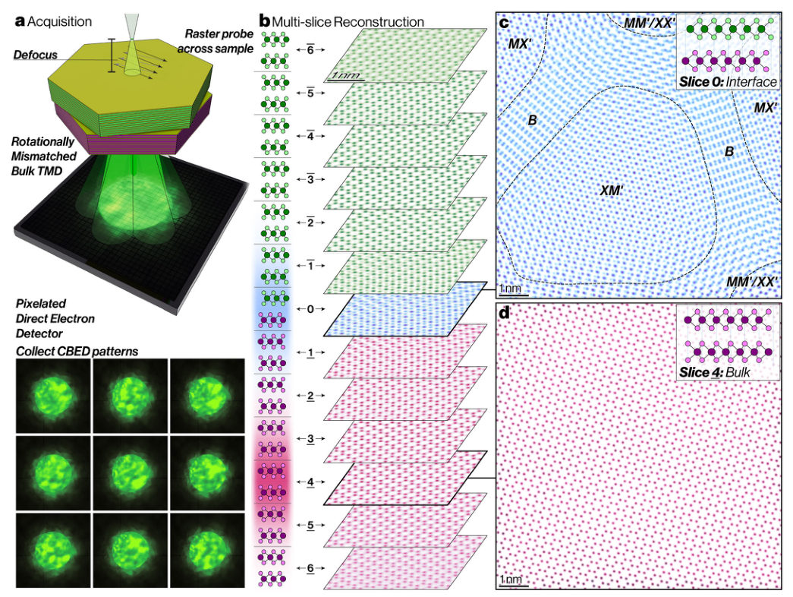
<figcaption class="paper-figure-caption"><b>Fig 1.</b> Figure 1: Depth dependent atomic structure revealed through multislice ptychography (two MoS2 layers per slice). (a) Schematic showing 4D-STEM data collection for ptychographic reconstruction. The upper panel details the acquisition technique whereby a defocused converged probe is raster scanned over the sample surface with a real space pixel spacing smaller than the probe size at the sample. A convergent-beam electron diffraction (CBED) pattern is collected for each overlapping probe position; examples are shown in the lower panel. (b) Reconstructed phase slices extracted from the CBED map through multislice iterative ptychographic reconstruction, with each 1.22 nm thick slice...</figcaption>
</figure>
<figure class="paper-figure-card">
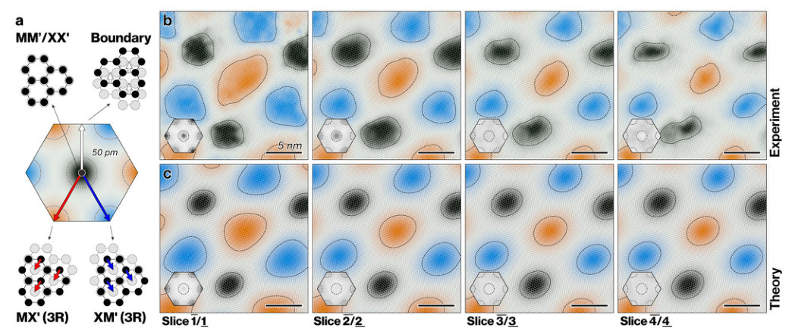
<figcaption class="paper-figure-caption"><b>Fig 2.</b> Figure 2: Quantifying the relative displacement vector as a function of distance from the twisted interface (three MoS2 layers per slice, θtwist = 1.23°). (a) Schematic illustrating our colour map characterizing displacement vector between MoS2 layers. Zero displacement (or displacement of one unit cell) corresponds to cases where all the atomic columns and hexagonal centres are superimposed. Full displacement (solid red and blue colours) corresponds to displacement equal to the nearest neighbour distance in the high symmetry directions. (b) Local displacement vector extracted from pairs of reconstructed phase slices equidistant from the twisted interface, coloured according to the map in...</figcaption>
</figure>
<figure class="paper-figure-card">
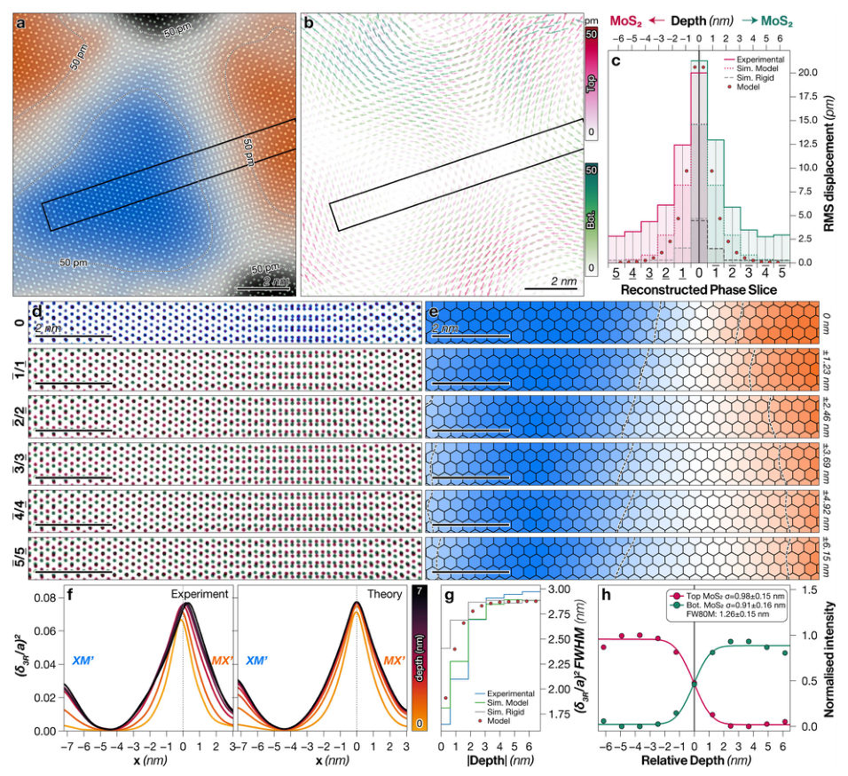
<figcaption class="paper-figure-caption"><b>Fig 3.</b> Figure 3: Atomically resolved, reconstruction-induced displacement mapping at a MoS2 homo-interface (θtwist = 1.23°). (a) Interface phase slice coloured by local stacking according to the scheme in Fig. 2a. (b) Reconstruction induced displacement of atomic columns at the interface. (c) RMS of measured displacement field for each two-MoS2-layer slice over the field of view in (a), compared to that extracted from simulated atomic models with and without atomic reconstruction. Overlaid is the theoretically predicted RMS displacement. (d) Overlaid phase slices for: top row – the twisted interface, below: overlaid slices equidistant from the interface, plotted using separate colourmaps, with...</figcaption>
</figure>
<figure class="paper-figure-card">
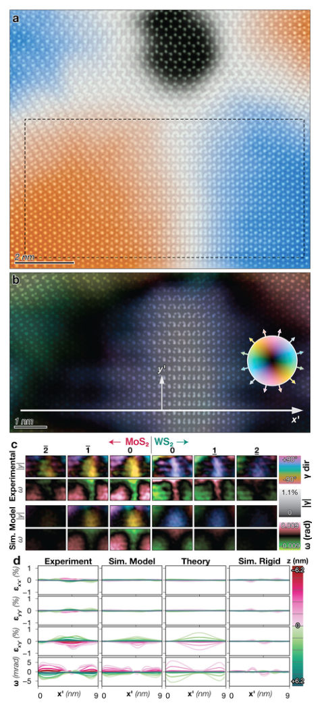
<figcaption class="paper-figure-caption"><b>Fig 4.</b> Figure 4: Strain mapping across an MX’/XM’ boundary at a 1.14° rotated MoS2/WS2 heterointerface. (a) Interface phase slice coloured according to the scheme in Fig. 2a. (b) Interface slice shear field extracted from the atomic displacement maps (slice 0). The brightness encodes the maximum shear strain magnitude, and the hue encodes its principal direction. The area is shown by the dashed line in (a). (c) Maps of shear and rotation extracted from the per- crystal displacement fields from slices near the boundary compared to theoretically predicted fields. Volumetric strain was minimal as predicted theoretically. (d) Profiles of rotated strain tensor components averaged along a path...</figcaption>
</figure>
</div>

<p><strong>Summary.</strong> This work pioneers the use of multi-slice electron ptychography to map the 3D atomic structure at buried, twisted van der Waals interfaces in TMD crystals. Researchers observed significant, twist-induced lattice reconstruction at these interfaces, which was stronger than predicted by theory. By combining these high-resolution measurements with continuum modeling, the study provides a structural foundation for understanding the emergent electronic properties of moiré systems.</p>
<p><strong>Why it may be interesting.</strong> While focused on solid-state structure, the ability to map strain and structural phase transitions at interfaces using highly sensitive, non-invasive techniques is relevant to understanding emergent quantum properties in moiré heterostructures.</p>
<details>
<summary>Detailed structure</summary>
<p><strong>Main problem.</strong> The study investigates the structural changes, specifically lattice reconstruction, that occur at buried van der Waals heterointerfaces between multilayer crystals.</p>
<p><strong>Main result.</strong> Strong, twist-induced in-plane lattice reconstruction was observed at the buried interface, exceeding theoretical predictions, and the technique allowed mapping the decay of this reconstruction into the bulk material.</p>
<p><strong>Method.</strong> The research combines advanced experimental techniques, namely multi-slice electron ptychography, with detailed theoretical modeling based on continuum mechanics and energy minimization.</p>
<p><strong>Model / system.</strong> The physical system involves marginally twisted rhombohedral interfaces between thick transition-metal dichalcogenide (TMD) crystals like $ ext{MoS}_2$. The theoretical model incorporates adhesion, in-plane elastic, and bending energies to predict layer-resolved atomic relaxation.</p>
<p><strong>Key observables.</strong> Three-dimensional atomic structure, twist-induced lattice reconstruction field, dislocation network, strain tensor evolution, and root-mean-squared (rms) displacement decay.</p>
<p><strong>Important parameters / regimes.</strong> Position precision of $\sim 3 	ext{ pm}$, depth resolution of $\sim 1 	ext{ nm}$, and twist angles ($   heta$) ranging from $0.2^\circ$ to $4^\circ$.</p>
<p><strong>Assumptions / limitations.</strong> The analysis assumes that the outer layers suppress out-of-plane bending, enhancing in-plane reconstruction, and that the reconstruction effect decays predictably away from the interface.</p>
<p><strong>Figures summary.</strong> Figures illustrate depth-dependent atomic structures via ptychography, showing reconstructed domains ($    ext{MX}',   ext{XM}'$) at the interface, and displacement maps showing the decay of reconstruction away from the buried junction.</p>
<p><strong>Paper structure.</strong> The paper first establishes the experimental capability using ptychography to image buried interfaces. It then presents the structural findings, detailing the observed reconstruction patterns and the decay profile of these distortions as a function of depth and twist angle. Finally, it compares these findings against continuum mechanical models.</p>
</details>
<details>
<summary>Abstract</summary>
<p>Atomic reconstruction at twisted two-dimensional interfaces governs many of their emergent optical, electronic, and mechanical properties, including sliding ferroelectricity. Despite recent progress in understanding lattice reconstruction in suspended twisted bilayers, structural changes at van der Waals heterointerfaces between multilayer crystals remain largely unexplored. Here we use multi-slice electron ptychography to non-invasively recover the three-dimensional atomic structure at marginally twisted rhombohedral interfaces between thick transition-metal dichalcogenide crystals. With a position precision of ~3 pm and a depth resolution ~1 nm, we resolve the twist-induced lattice reconstruction field per layer, and the resulting dislocation network at the buried interface. Despite the bulk nature, we observe markedly strong in-plane interfacial reconstruction due to suppression of the out-of-plane bending by outer layers, exceeding predictions from our three-dimensional modelling. Furthermore, we extract the strain tensor evolution during the decay of the reconstruction into the bulk, providing a structural foundation for understanding multi-layer moiré systems.</p>
</details>
<p><sub><a href="#top">↑ back to top</a></sub></p>

<p><a id="paper-2608.30170"></a></p>
<h3 id="switchable-magnetoelectric-transport-in-graphene-via-a-van-der-waals-multiferroic"><a href="http://arxiv.org/abs/2608.30170v1">Switchable Magnetoelectric Transport in Graphene via a Van der Waals Multiferroic</a></h3>
<p><strong>Authors:</strong> Miuko Tanaka, Shunta Aoki, Ikoi Sato, Hao Ou, Itishree Pradhan, Ngoc Han Tu, Yangsong Chen, Tomohiro Ishii, Kenji Watanabe, Takashi Taniguchi, Michihisa Yamamoto, Masayuki Hashisaka, Jiang Pu, Naoki Ogawa, Toshiya Ideue<br>
<strong>Type:</strong> experiment · <strong>Category:</strong> other · <strong>PDF:</strong> <a href="https://arxiv.org/pdf/2608.30170v1">https://arxiv.org/pdf/2608.30170v1</a><br>
<strong>Analysis basis:</strong> full PDF text, analyzed in chunks
<strong>Topic relevance:</strong> <code>analog quantum simulation</code> <strong>1/5</strong> · <code>driven-dissipative phase transition</code> <strong>1/5</strong> · <code>quantum measurements</code> <strong>1/5</strong></p>
<div class="figure-strip-hint">↔ Scroll figures horizontally</div>
<div class="paper-figures-scroll">
<figure class="paper-figure-card">
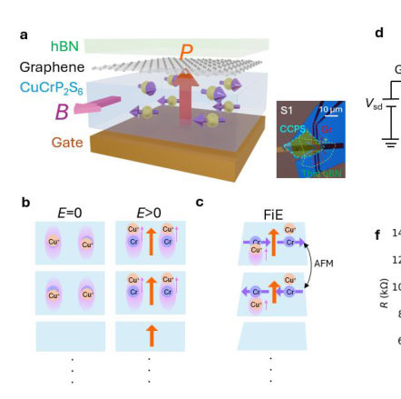
<figcaption class="paper-figure-caption"><b>Fig 1.</b> Figure 1: Transport signatures of switchable polarization in graphene/CuCrP2S6 (CCPS) interfaces.</figcaption>
</figure>
<figure class="paper-figure-card">
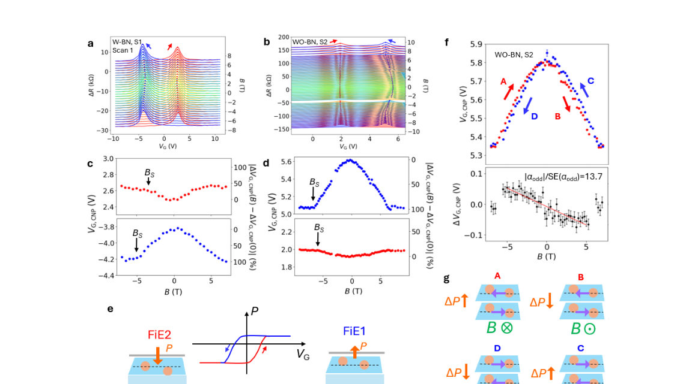
<figcaption class="paper-figure-caption"><b>Fig 2.</b> Figure 2: Magnetoelectric transport in graphene/CCPS interfaces.</figcaption>
</figure>
<figure class="paper-figure-card">
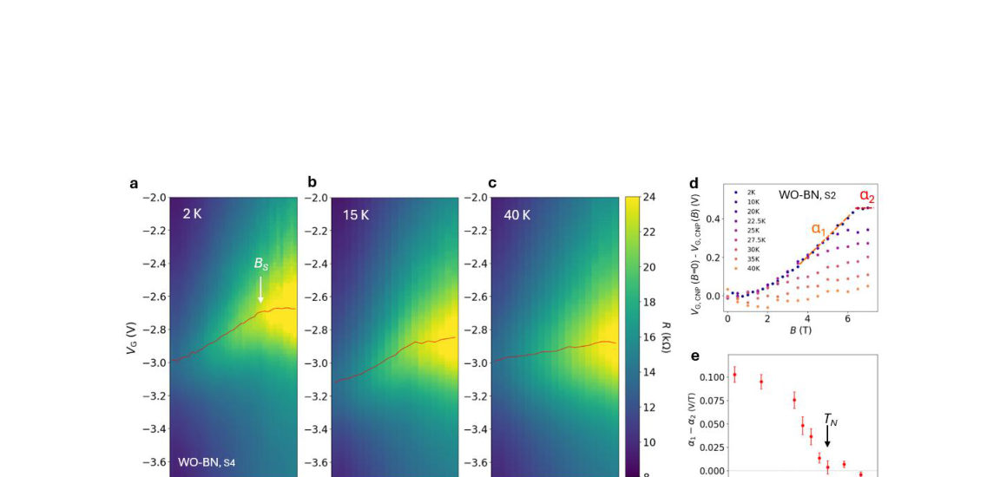
<figcaption class="paper-figure-caption"><b>Fig 3.</b> Figure 3: Temperature dependence of magnetoelectric transport.</figcaption>
</figure>
<figure class="paper-figure-card">
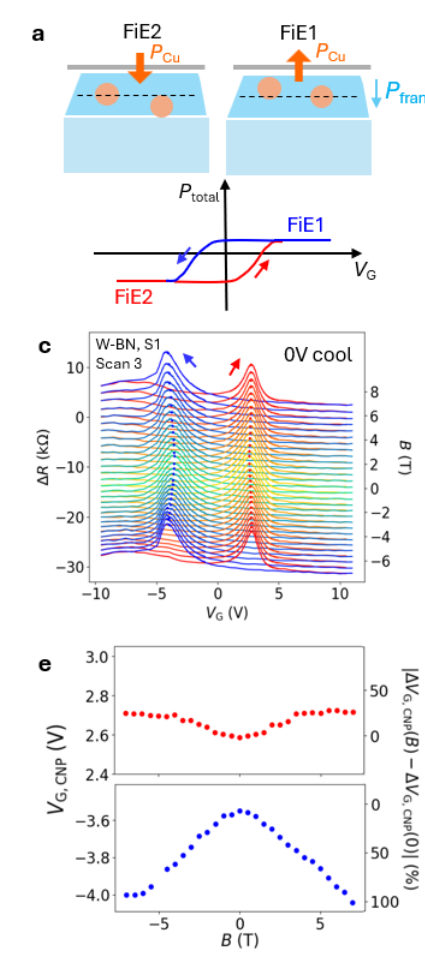
<figcaption class="paper-figure-caption"><b>Fig 4.</b> Figure 4: Controlling multiferroic domains and switchable magnetoelectric transport.</figcaption>
</figure>
</div>

<p><strong>Summary.</strong> This work reports on achieving gate-switchable magnetoelectric transport using a graphene/multiferroic heterostructure. By measuring the shift of the graphene's charge neutrality point under applied magnetic fields, the authors provide direct evidence of the magnetoelectric effect at the interface. This establishes a novel platform for engineering functional 2D van der Waals electronic devices.</p>
<p><strong>Why it may be interesting.</strong> While primarily condensed matter/spintronics, the study of coupled order parameters (electric and magnetic) and their control via external fields (E and B) touches upon concepts relevant to open quantum systems and engineered quantum interfaces.</p>
<details>
<summary>Detailed structure</summary>
<p><strong>Main problem.</strong> The central goal is to develop next-generation electronics and spintronics by achieving electric and magnetic control of transport properties at atomic interfaces.</p>
<p><strong>Main result.</strong> The study demonstrates the first realization of gate-switchable magnetoelectric transport in a van der Waals heterostructure, showing that the magnetic field can modulate the transport peak in a polarization-dependent manner.</p>
<p><strong>Method.</strong> Transport measurements (resistance/capacitance vs. gate voltage and magnetic field) were performed on graphene/multiferroic heterostructures.</p>
<p><strong>Model / system.</strong> The system is a van der Waals heterostructure combining graphene with the multiferroic material $   ext{CuCrP}_2    ext{S}_6$ (CCPS). The physics relies on the coupling between the electric polarization (ferroelectric switching) and the magnetic state (magnetoelectric effect) at the interface.</p>
<p><strong>Key observables.</strong> Hysteresis in the charge-neutrality resistance peak, shift of the charge neutrality point ($   ext{V}_{    ext{G,CNP}}$) under in-plane magnetic fields, and reversible switching of transport via electric field control.</p>
<p><strong>Important parameters / regimes.</strong> Low temperatures ($T=2	ext{ K}$), in-plane magnetic fields ($B$), and gate voltages ($V_G$).</p>
<p><strong>Assumptions / limitations.</strong> The analysis assumes that the graphene carrier density is modulated by both the electrostatic gate voltage and the surface polarization of the multiferroic layer.</p>
<p><strong>Figures summary.</strong> Figures show $ ext{CNP}$ shifts vs. $V_G$ demonstrating polarization hysteresis, and $  ext{CNP}$ shifts vs. $B$ confirming the magnetoelectric effect. Time-dependent measurements confirm the nature of the switching mechanism.</p>
<p><strong>Paper structure.</strong> The paper progresses by establishing the physical platform, demonstrating polarization switching via gate voltage sweeps, quantifying the magnetoelectric coupling using magnetic field sweeps, and finally confirming the nature of the switching mechanism through time-dependent measurements.</p>
</details>
<details>
<summary>Abstract</summary>
<p>Electric and magnetic control of transport properties at atomic interfaces is central to the development of next generation electronics and spintronics. Van der Waals multiferroics materials that simultaneously host dielectric and magnetic orders down to the monolayer limit offer a promising platform for such interfacial control, yet the realization of electronic functionalities that exploit the unique attributes of van der Waals multiferroics has largely remained elusive. Here, we realize a van der Waals heterostructure comprising graphene and the multiferroic CuCrP2S6, enabling gate-switchable magnetoelectric transport in graphene, mediated by the multiferroic layer. The charge-neutrality resistance peak of graphene exhibits pronounced hysteresis arising from polarization flip in the multiferroic state. Application of an in-plane magnetic field shifts this peak in a polarization-dependent manner, revealing magnetic-field-induced polarization modulation a direct signature of the magnetoelectric effect. Furthermore, cooling the device under an applied electric field enables domain control of the multiferroic order, allowing reversible switching of the interfacial magnetoelectric transport. These results provide the first demonstration of interfacial magnetoelectric transport in a vdW heterostructure, and establish a pathway for engineering two-dimensional van der Waals interfaces for functional device applications.</p>
</details>
<p><sub><a href="#top">↑ back to top</a></sub></p>

<p><a id="paper-2608.30921"></a></p>
<h3 id="breakdown-of-charge-conjugation-symmetry-of-disclinations-in-2d-crystals"><a href="http://arxiv.org/abs/2608.30921v1">Breakdown of Charge-Conjugation Symmetry of Disclinations in 2D Crystals</a></h3>
<p><strong>Authors:</strong> Ruslan Yamaletdinov, Mikhail I. Katsnelson, Oleg V. Yazyev<br>
<strong>Type:</strong> theory · <strong>Category:</strong> other · <strong>PDF:</strong> <a href="https://arxiv.org/pdf/2608.30921v1">https://arxiv.org/pdf/2608.30921v1</a><br>
<strong>Analysis basis:</strong> full PDF text, analyzed in chunks
<strong>Topic relevance:</strong> <code>Frenkel-Kontorova</code> <strong>1/5</strong> · <code>analog quantum simulation</code> <strong>1/5</strong></p>
<div class="figure-strip-hint">↔ Scroll figures horizontally</div>
<div class="paper-figures-scroll">
<figure class="paper-figure-card">
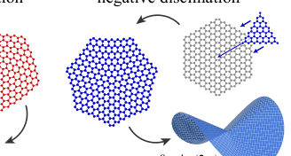
<figcaption class="paper-figure-caption"><b>Fig 1.</b> FIG. 1. Construction of disclinations with topological charges s = ±π/3.</figcaption>
</figure>
<figure class="paper-figure-card">
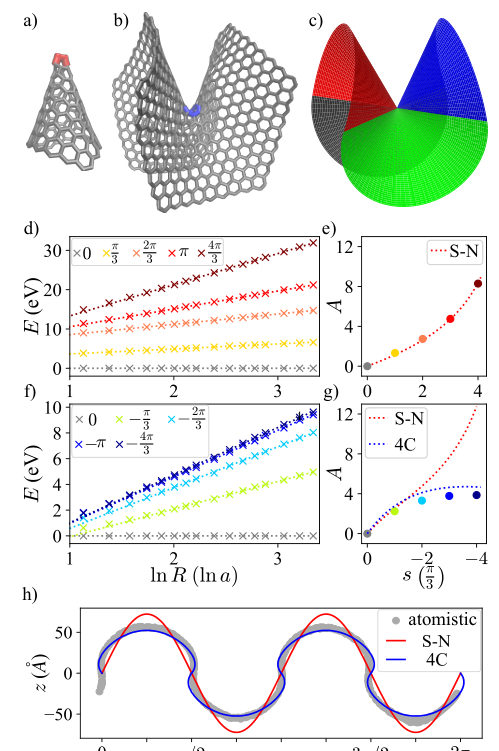
<figcaption class="paper-figure-caption"><b>Fig 2.</b> FIG. 2. Optimized atomistic geometry containing (a) a pos- itive disclination and (b) a negative disclination with charge s = ±4π/3. Colors highlight the disclination cores. (c) Geo- metric approximation of a negative disclination (s = −4π/3) by four cones (4C). (d,f) Energies of circular membranes with disclinations charges (d) s ≥0 and (f) s ≤0 plotted as a function of ln R (a ≈2.46 Å), together with fits of the form E = κA(s) ln R + C(s). (e,g) Prefactor A(s) extracted from the fits for (e) s ≥0 and (f) s ≤0). Bending rigidity κ = 0.956 eV, obtained in line with approach described in Ref. [39]. Red dotted lines denote the predictions of Seung and Nelson (S-N) [31]. For negative...</figcaption>
</figure>
<figure class="paper-figure-card">
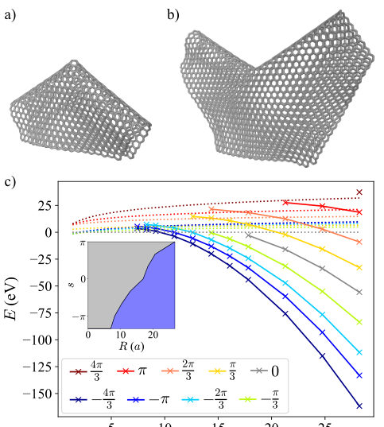
<figcaption class="paper-figure-caption"><b>Fig 3.</b> FIG. 3. Folded structures containing disclinations with charge (a) s = +2π/3 and (b) s = −2π/3. (c) Energies of folded structures for different disclination charges s. Dotted lines denote the fits obtained for the corresponding unfolded structures, as in Fig. 2(e,g). Inset: ground-state structure as a function of system size and disclination charge; gray and blue regions denote unfolded and folded structures, respec- tively.</figcaption>
</figure>
<figure class="paper-figure-card">
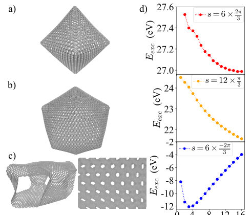
<figcaption class="paper-figure-caption"><b>Fig 4.</b> FIG. 5. Polyhedral structures formed by (a) six s = +2π/3 disclinations (octahedron) and (b) twelve s = +π/3 discli- nations (icosahedron), respectively. (c) Primitive cell and the top view of a 2D periodic structure obtained for six s = −2π/3 disclinations, forming a pillared bilayer-graphene geometry with trigonal antiprismatic openings. (d) Interaction en- ergy Eexc for structures assembled from equilateral triangular patches of edge length ∆r, containing n identical disclinations of charge s = ±nπ/3 placed at equivalent positions.</figcaption>
</figure>
<figure class="paper-figure-card">
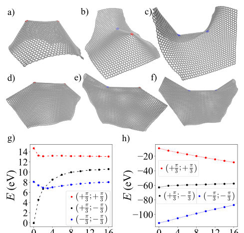
<figcaption class="paper-figure-caption"><b>Fig 5.</b> FIG. 4. Unfolded and folded configurations containing two disclinations: (a,d) two positive disclinations (+π/3, +π/3), (b,e) one positive and one negative disclination (+π/3, −π/3), and (c,f) two negative disclinations (−π/3, −π/3). Total en- ergy as a function of separation ∆r (a ≈2.46Å) between two disclinations for (g) unfolded and (h) folded configurations. The initial graphene flake has an edge-to-edge diameter of 65a ≈16 nm).</figcaption>
</figure>
</div>

<p><strong>Summary.</strong> This work explores the physics of topological defects (disclinations) in 2D crystals like graphene. Using simulations, the authors reveal that the elastic behavior of these defects is not symmetric with respect to the sign of their topological charge. Specifically, they find that negative defects interact attractively, contrasting sharply with the repulsive interactions observed for positive defects.</p>
<p><strong>Why it may be interesting.</strong> While the topic is condensed matter physics, the study of topological defects and symmetry breaking in low-dimensional systems shares conceptual links with defect physics in quantum materials or engineered quantum structures.</p>
<details>
<summary>Detailed structure</summary>
<p><strong>Main problem.</strong> The study investigates the elastic properties, energetics, and interactions of topological defects called disclinations in 2D crystalline membranes.</p>
<p><strong>Main result.</strong> The paper finds a fundamental breakdown of charge-conjugation symmetry: positive disclinations repel, while negative disclinations exhibit a robust long-range attraction.</p>
<p><strong>Method.</strong> The research combines atomistic simulations with continuum elasticity theory to calculate the energy and morphology of disclination configurations.</p>
<p><strong>Model / system.</strong> The system is a free-standing 2D crystal, specifically graphene, containing topological defects (disclinations) characterized by a topological charge $s$. The analysis compares theoretical continuum predictions with atomistic simulation results.</p>
<p><strong>Key observables.</strong> Interaction energy ($E_{exc}$), energy scaling with charge $|s|$, equilibrium shape, and adhesion energy in folded membranes.</p>
<p><strong>Important parameters / regimes.</strong> Topological charge ($s$), bending rigidity ($\kappa$), and separation distance ($\Delta r$).</p>
<p><strong>Assumptions / limitations.</strong> The analysis relies on continuum models, such as the saddle ansatz, and uses approximations like the four-cone configuration to model negative curvature defects.</p>
<p><strong>Figures summary.</strong> Figures illustrate the construction of positive and negative disclinations, compare energy fits showing deviations from expected scaling for negative charges, and show how self-adhesion stabilizes negative curvature defects.</p>
<p><strong>Paper structure.</strong> The paper first establishes the theoretical framework using continuum elasticity, then uses atomistic simulations to test the theory for positive and negative charges, culminating in a detailed comparison of interaction forces and the role of self-adhesion.</p>
</details>
<details>
<summary>Abstract</summary>
<p>Disclinations are elementary topological defects in two-dimensional (2D) crystalline membranes, yet their elastic properties remain largely unexplored. Using atomistic simulations, we address the energetics, morphology, and interactions of disclinations in free-standing graphene, a prototypical 2D crystal. We find that while disclinations with positive topological charges follow an expected behavior, negative disclinations exhibit sublinear energy scaling with charge as well as equilibrium shape that deviates sharply from the conventional saddle ansatz. This breakdown of charge-conjugation symmetry leads to qualitatively distinct interactions: positive disclinations repel, whereas negative disclinations display a robust long-range attraction. These trends are shown to be further amplified by self-adhesion in folded membranes. Our results uncover a fundamentally different energetic landscape for negative curvature defects and provide a basis for understanding the stability, self-folding behavior, and defect-driven morphology of graphene and other 2D membranes.</p>
</details>
<p><sub><a href="#top">↑ back to top</a></sub></p>

<p><a id="paper-2608.29837"></a></p>
<h3 id="controlling-the-coupling-strengths-in-nanophotonic-networks-using-modified-yagi-uda-nanoplasmonic-antennas"><a href="http://arxiv.org/abs/2608.29837v1">Controlling the Coupling Strengths in Nanophotonic Networks using Modified Yagi-Uda Nanoplasmonic Antennas</a></h3>
<p><strong>Authors:</strong> Vidar Flodgren, Anders Mikkelsen<br>
<strong>Type:</strong> theory · <strong>Category:</strong> disordered systems and neural networks · <strong>PDF:</strong> <a href="https://arxiv.org/pdf/2608.29837v1">https://arxiv.org/pdf/2608.29837v1</a><br>
<strong>Analysis basis:</strong> full PDF text, analyzed in chunks
<strong>Topic relevance:</strong> <code>interference shaping light</code> <strong>1/5</strong> · <code>methods for driven-dissipative</code> <strong>1/5</strong></p>
<div class="figure-strip-hint">↔ Scroll figures horizontally</div>
<div class="paper-figures-scroll">
<figure class="paper-figure-card">
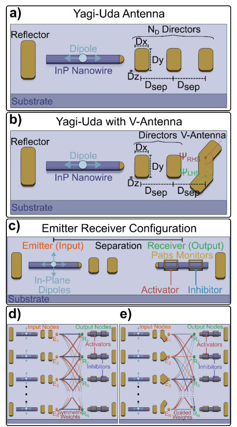
<figcaption class="paper-figure-caption"><b>Fig 1.</b> Figure 1 - a) Antenna design, showing the metal reflector and director components and emitter nanowire of the Yagi-Uda. b) Modified Yagi-Uda design includes an end-component termed as a V-Antenna. c) System of an emitter and a receiver antenna. Dipole emitters simulate emission from the nanowire. The Power absorption monitors (Pabs) for the receiver used to estimate weights of the system. The Activator and Inhibitor regions of the nanowire indicate exciting and inhibiting regions of the nanowire receiver in an artificial neural node configuration that can be designed by doping the nanowire as described in ref. 31. d) Network with Yagi-Uda antenna that gives a symmetric emission between...</figcaption>
</figure>
<figure class="paper-figure-card">
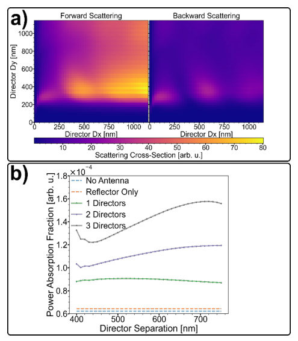
<figcaption class="paper-figure-caption"><b>Fig 2.</b> Figure 2 - a) Forward and backward scattering from a symmetric director element as in Fig 1a when varying Dx and Dy as noted in Fig 1a. Color intensity of the plot shows the forward and backward power scattering cross-section from a source with wavelength from 750-1050nm (InP nanowire emission). b) Power Absorption fraction in the receiver nanowire shown in Fig 1b from the emitter in Fig 1b. The introduction of directors increases the Power absorption by a factor of 1.5, 1.9 and 2.6 respectively for 1,2 and 3 directors.</figcaption>
</figure>
<figure class="paper-figure-card">
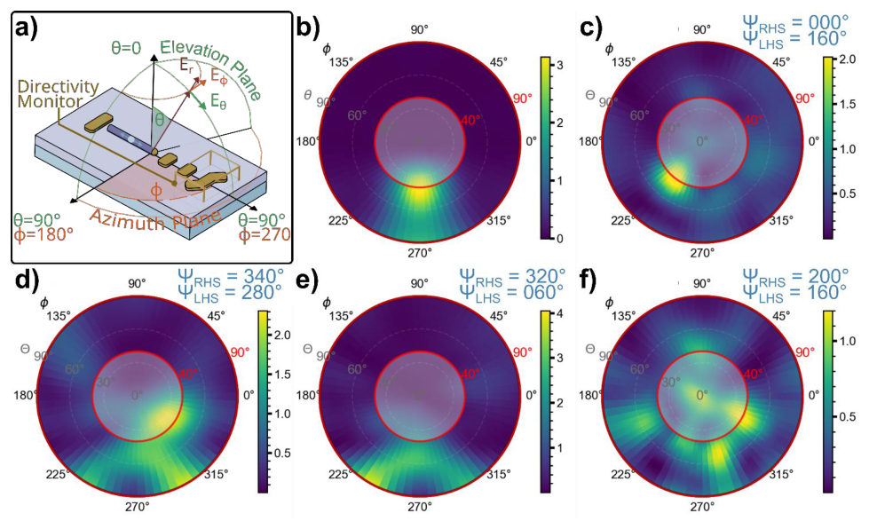
<figcaption class="paper-figure-caption"><b>Fig 3.</b> Figure 3 –a) Model of modified Yagi-Uda antenna with asymmetric V-element in the end. Angles for the far- field angular emitter are given. b)-f) Angular plots of the total far-field radiated power density in each direction normalized by the total radiated power in all directions.  angle from 0-360 is around the circumference.  from 0-90 is given radially with 0 in the center and 90 at the edge. The emission in the angular range  from 40-90 is indicated by the two red lines will be realistically available to the receiver (when the system is covered in a planar 2D waveguiding material (e.g. Al2O3). b) Is from an antenna less system, while in c)-f) Angles RHS and LHS refers to the...</figcaption>
</figure>
<figure class="paper-figure-card">
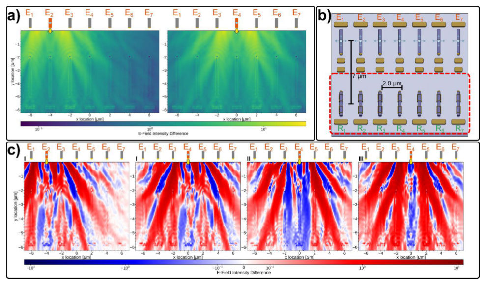
<figcaption class="paper-figure-caption"><b>Fig 4.</b> Figure 4 - a) Intensity of the E-field in the receiver area of a system with 7 Yagi-Uda emitters and 7 receivers with examples of one emitter emitting light. The (red) emitting antenna is indicated by the yellow arrow (it is emitter #2 and #4). b) Sketch of the simulated emitter/receiver antenna system. The red box indicates the area of this system that is shown in Fig 4a. c) Intensity difference maps between symmetric Yagi-Uda and three modified Yagi-Uda systems with the middle emitter (#4) on. The design of I, II, III, referring to the wing angles of Fig 1b are shown in the SI and given by I:RHS=[0,0,0,0,80,80,80],...</figcaption>
</figure>
<figure class="paper-figure-card">
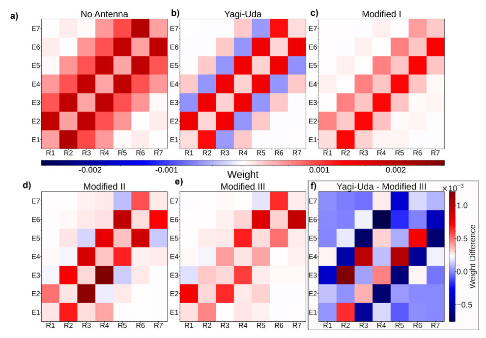
<figcaption class="paper-figure-caption"><b>Fig 5.</b> Figure 5 - a) Weight connections of Emitters 1-7 on receivers 1-7 in networks as described by Fig 1d and e. The receiver nanowire is assumed to have both an inhibiting and exciting region as indicated in Fig 1d. The weights as defined by the summation of exciting and inhibiting signals are seen in a)-e). Schematics of the design of I, II, III, referring to Fig 1a are shown in the SI and given by I:RHS=[0,0,0,0,80,80,80],LHS=[80,80,80,220,0,0,0]; II:RHS=[0,0,0,0,80,80,80],LHS=[80,80,80,0,0,0,0]; III:RHS=[0,0,0,0,80,30,80],LHS=[30,70,80,320,60,30,0]. An angle 0 indicates that this wing is not present. f) Matrices showing the difference in weights between symmetric Yagi-Uda (Fig 5b) and...</figcaption>
</figure>
</div>

<p><strong>Summary.</strong> This paper proposes using modified Yagi-Uda nanoplasmonic antennas integrated with III-V nanowires to create compact optical interconnects for neural networks. By precisely controlling the antenna geometry, the authors demonstrate the ability to engineer highly variable coupling strengths, enabling the realization of complex artificial synaptic weight matrices on a chip.</p>
<p><strong>Why it may be interesting.</strong> While the core physics is classical electromagnetism, the application directly models artificial synapses and network connectivity, linking advanced photonics to computational models relevant to neuromorphic computing research.</p>
<details>
<summary>Detailed structure</summary>
<p><strong>Main problem.</strong> The paper addresses the need for compact alternatives to traditional waveguides for implementing optical neural networks on a chip.</p>
<p><strong>Main result.</strong> By using modified Yagi-Uda nanoplasmonic antennas, the authors demonstrated the ability to achieve highly variable and complex weight distributions between connected nodes in artificial neural network layers.</p>
<p><strong>Method.</strong> The study relies on simulating the interaction of light with nanoplasmonic structures using Finite Difference Time Domain (FDTD) methods.</p>
<p><strong>Model / system.</strong> The physical system combines III-V nanowire emitters/receivers with nanoplasmonic metal structures, specifically modified Yagi-Uda antennas. This setup is designed to mimic the connectivity and weight calculation of artificial neural network layers.</p>
<p><strong>Key observables.</strong> Power absorption ($    ext{Pabs}$) on the receiver, forward/backward scattering cross-section, and the complex weight distribution between nodes.</p>
<p><strong>Important parameters / regimes.</strong> Nanowire dimensions ($L=3 \mu	ext{m}, r=88 	ext{ nm}$), antenna director dimensions (e.g., $[D_x, D_y, D_z] = [485, 350, 60]$ nm), and director separation (750 nm).</p>
<p><strong>Assumptions / limitations.</strong> The underlying substrate is $    ext{SiO}_2$ on $    ext{Si}$, and the nanowires are assumed to function as building blocks capable of non-linear evaluation.</p>
<p><strong>Figures summary.</strong> Figures illustrate the basic concept, showing symmetric and modified Yagi-Uda designs, and detail the forward/backward scattering cross-section and power absorption fraction as a function of antenna director parameters.</p>
<p><strong>Paper structure.</strong> The paper introduces the problem of compact on-chip optical communication, proposes the nanoplasmonic/Yagi-Uda antenna solution, details the simulation methodology (FDTD), presents results showing directional control and weight tunability, and concludes by discussing the potential for complex network realization.</p>
</details>
<details>
<summary>Abstract</summary>
<p>On-chip communication in optical neural networks is commonly done via waveguides which results in large system footprints. A compact alternative is to broadcast light signals between nano-optoelectronic components in free space and tailor the light field distribution using sub-wavelength nanophotonics. We propose and simulate nanoplasmonic metal structures in combination with III-V nanowire emitters and receivers to create an optical network in which the shape and position of these nanostructures create varying weights between the nano-optoelectronic nodes. Using Finite Difference Time Domain modelling, we investigate systems of experimentally verified nanowire optoelectronics combined with nanoplasmonic structures that can be made in the same fabrication step as electrical contacts powering the nanowires. We investigate both individual nanowire/antenna devices as well as networks corresponding to two layers in a neural network. We show that directed communication from a nanowire node can be significantly altered using Yagi-Uda antennas. Modifying the antenna with an asymmetric director component enables the directing of light several different angular directions simultaneously. We find that highly variable complex weight distribution between the connections in two seven node layers can be achieved depending on the combined geometry of the antenna components. The possible weight distributions in compact layers of nanowire nodes could be used for creating a variety of neural networks with complex connectivity. The concepts can be generalized to other types of nanoscale emitter/receiver systems.</p>
</details>
<p><sub><a href="#top">↑ back to top</a></sub></p>

<p><a id="paper-2608.29822"></a></p>
<h3 id="interplay-of-excitonic-charge-density-wave-and-superconductivity-in-transition-metal-dichalcogenides"><a href="http://arxiv.org/abs/2608.29822v1">Interplay of Excitonic Charge Density Wave and Superconductivity in Transition Metal Dichalcogenides</a></h3>
<p><strong>Authors:</strong> Ayussh Anubhav Patel, Amit Ghosal<br>
<strong>Type:</strong> theory · <strong>Category:</strong> strongly correlated electrons · <strong>PDF:</strong> <a href="https://arxiv.org/pdf/2608.29822v1">https://arxiv.org/pdf/2608.29822v1</a><br>
<strong>Analysis basis:</strong> full PDF text, analyzed in chunks
<strong>Topic relevance:</strong> <code>Frenkel-Kontorova</code> <strong>1/5</strong> · <code>Keldysh / 2PI / non-Gaussian methods</code> <strong>1/5</strong></p>
<div class="figure-strip-hint">↔ Scroll figures horizontally</div>
<div class="paper-figures-scroll">
<figure class="paper-figure-card">
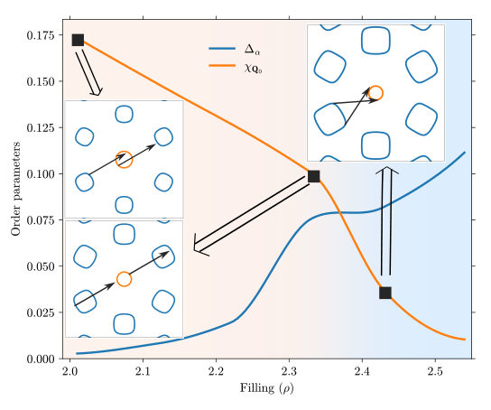
<figcaption class="paper-figure-caption"><b>Fig 1.</b> FIG. 1. Energy-minimized phase diagram obtained by changing electronic density. The system undergoes a cross-over from C- CDW to NC-CDW order. Insets show the schematics of the relevant scattering in the system. Refer Fig 5 for details.</figcaption>
</figure>
<figure class="paper-figure-card">
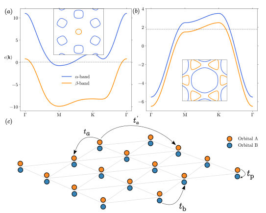
<figcaption class="paper-figure-caption"><b>Fig 2.</b> FIG. 2. (a) Primary model: On-site energies ϵA = ϵB = −2.5, nearest neighbor hopping ta = tb = 1.0, Next nearest neighbor hopping only in A-orbital t ′ a = 0.8, on-site inter-orbital hopping is tp = 4.5 (b) and for Secondary model: ϵa 0 = 0.0, ta = tb = −1.0, t ′ a = 0.0, tp = 0.5 (inset of both figure show the geome- try of the fermi surface along the dashed black line). (c) The underlying microscopic tight-binding model which, upon diago- nalization, generates the bands in (a) and (b).</figcaption>
</figure>
<figure class="paper-figure-card">
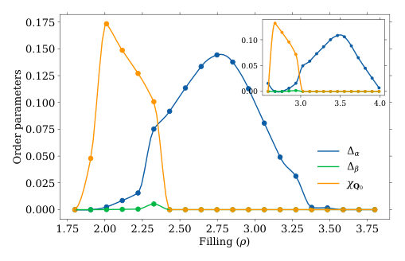
<figcaption class="paper-figure-caption"><b>Fig 3.</b> FIG. 3. The phase diagram plotted for primary model with in- teraction strengths W = 8.0, Uα = −1.1, Uβ = 0.0 and for a fixed modulation vector of Q0 = (π, π/ √</figcaption>
</figure>
<figure class="paper-figure-card">
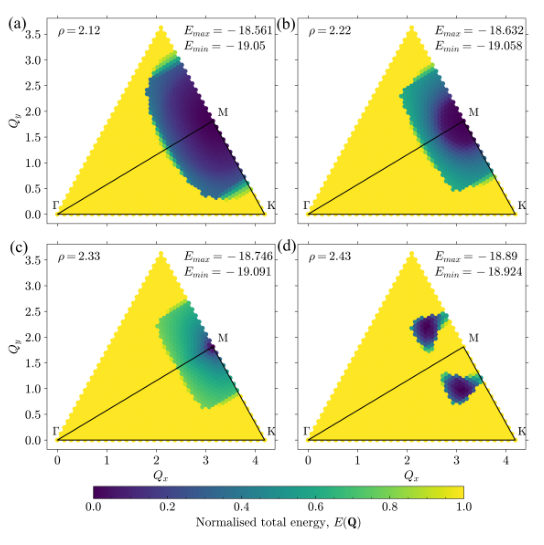
<figcaption class="paper-figure-caption"><b>Fig 4.</b> FIG. 4. Normalized ground state energy E(Q) of the primary model with W = 8.0, U1 = −1.1 and U2 = 0.0 for all possi- ble unique modulation wave-vectors chosen from the irreducible Brillouin zone. (a),(b) and (c) The global minima fixed at Q0 show the commensurate order. The energy compared to the normal-state energy (Emax) is weakened as the density is tuned. (d) Non-commensurate order: further tuning does not support the energy gain at Q0 and the minima split.</figcaption>
</figure>
<figure class="paper-figure-card">
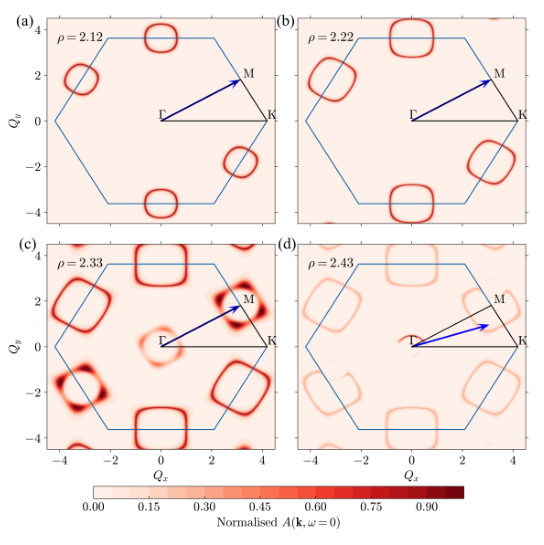
<figcaption class="paper-figure-caption"><b>Fig 5.</b> FIG. 5. The spectral function corresponding to the FS A(k, ω = 0) for the ground state.(a)-(b) There is complete scattering be- tween the electron pockets (at the M-point) and the hole pocket (at the Γ-point) also, the outer pocket has a slight increase in size (as seen from the unscattered part of the FS). (c) Due to en- hanced filling, the FS at the M-point does not perfectly match the FS at the Γ-point, hence partial scattering. (d) Further tuning of density makes the scattering between the curvature of the outer FS and the inner circular points FS favorable.</figcaption>
</figure>
</div>

<p><strong>Summary.</strong> This theoretical work models the competition between excitonic Charge Density Waves and Superconductivity in TMDs using a minimal mean-field Hamiltonian. By analyzing the phase diagram and spectral properties, the authors demonstrate that tuning parameters drive a transition from CDW dominance to SC emergence. The findings provide crucial insights into the intertwined nature of these two correlated electronic orders.</p>
<p><strong>Why it may be interesting.</strong> The competition between CDW and SC is a canonical problem in strongly correlated electron systems, and the use of excitonic pairing mechanisms provides a rich theoretical framework relevant to understanding unconventional superconductivity.</p>
<details>
<summary>Detailed structure</summary>
<p><strong>Main problem.</strong> The paper investigates the complex interplay and competition between excitonic Charge Density Wave (CDW) order and conventional Superconductivity (SC) in Transition Metal Dichalcogenides (TMDs).</p>
<p><strong>Main result.</strong> The phase diagram shows a generic transition where CDW order wanes and SC emerges as tuning parameters change, with the CDW nature evolving from commensurate to incommensurate.</p>
<p><strong>Method.</strong> The study employs a minimal mean-field model Hamiltonian incorporating both excitonic CDW pairing and intra-band SC attraction, analyzed via self-consistent calculations.</p>
<p><strong>Model / system.</strong> The system is modeled on a two-dimensional triangular lattice using a two-band tight-binding Hamiltonian for the single-particle part. Interactions include excitonic CDW pairing (particle-hole) and conventional SC pairing (intra-band).</p>
<p><strong>Key observables.</strong> CDW and SC order parameters ($\chi_q, \Delta$), spectral function $A(k, \omega)$, and the average Density of States (DOS) $N(\omega)$.</p>
<p><strong>Important parameters / regimes.</strong> Tuning parameters include carrier density ($
ho$), and interaction strengths ($W$ for CDW, $U$ for SC).</p>
<p><strong>Assumptions / limitations.</strong> The CDW is assumed to have an excitonic origin (inter-band pairing), and SC is assumed to be conventional (intra-band pairing). The model is a minimal toy model.</p>
<p><strong>Figures summary.</strong> Figures illustrate the phase diagram showing C-CDW to NC-CDW crossover, band structures, and the evolution of the DOS revealing CDW gaps, SC kinks, and their coexistence.</p>
<p><strong>Paper structure.</strong> The paper develops the mean-field Hamiltonian, analyzes the ground state energy minimization with respect to the modulation wave vector Q, and then calculates the resulting spectral properties (DOS, FS) across varying carrier densities to map the phase diagram.</p>
</details>
<details>
<summary>Abstract</summary>
<p>Motivated by the unique characteristics of the phase diagram of 1T-TiSe2, we investigated the complex interplay of excitonic charge density wave (CDW) and superconductivity (SC) on a two-dimensional triangular lattice, each site accommodating two orbitals. In response to various tuning parameters, such as intercalation, pressure, substitution, and gating, these materials exhibit a generic and gradual waning of CDW, followed by the emergence of SC. Intriguingly, the nature of CDW changes from commensurate to incommensurate with the appearance of SC. Setting up a minimal model based on observed excitonic CDW and electron and hole pockets in the Fermi surface, and analyzing it within a simple mean-field framework, we can comprehend some salient experimental features. We also found that the qualitative phase diagram remains insensitive to details of the band structure. These results offer crucial insights into the nature of the interplay between CDW and SC in transition-metal dichalcogenides.</p>
</details>
<p><sub><a href="#top">↑ back to top</a></sub></p>

<p><a id="paper-2608.28994"></a></p>
<h3 id="electronic-state-of-vortices-at-twin-boundaries-in-a-nematic-superconductor"><a href="http://arxiv.org/abs/2608.28994v1">Electronic state of vortices at twin boundaries in a nematic superconductor</a></h3>
<p><strong>Authors:</strong> Keita Goto, Hiroto Adachi, Masanori Ichioka<br>
<strong>Type:</strong> theory · <strong>Category:</strong> strongly correlated electrons · <strong>PDF:</strong> <a href="https://arxiv.org/pdf/2608.28994v1">https://arxiv.org/pdf/2608.28994v1</a><br>
<strong>Analysis basis:</strong> full PDF text, analyzed in chunks
<strong>Topic relevance:</strong> <code>Keldysh / 2PI / non-Gaussian methods</code> <strong>1/5</strong></p>
<div class="figure-strip-hint">↔ Scroll figures horizontally</div>
<div class="paper-figures-scroll">
<figure class="paper-figure-card">
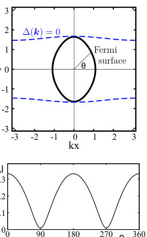
<figcaption class="paper-figure-caption"><b>Fig 1.</b> FIG. 2. (a) Elliptic Fermi surface in our calculations is pre- sented by a bold line in momentum space (kx, ky). We also show dashed lines for the node positions of the superconduct- ing gap in the uniform state, given by ∆(k) = 0. (b) Super- conducting gap |∆(k)| on the Fermi surface as a function of angle θ given in (a).</figcaption>
</figure>
<figure class="paper-figure-card">
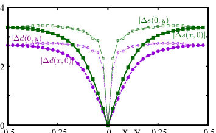
<figcaption class="paper-figure-caption"><b>Fig 2.</b> FIG. 3. Spatial structure of the vortex state is presented in real space r/R = (x, y). Density plots for the amplitude of the pair potential for (a) the s wave component |∆s(r)| and (b) the d wave component |∆d(r)| within a unit cell. (c) Profiles of |∆s(r)| (solid lines) and |∆d(r)| (dashed lines) are plotted in the path r/R = (x, 0) along the x axis (bold lines) and r/R = (0, y) along the y axis (thin lines) from the vortex center.</figcaption>
</figure>
<figure class="paper-figure-card">
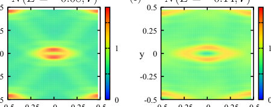
<figcaption class="paper-figure-caption"><b>Fig 3.</b> FIG. 4. Density plots for the LDOS N(E, r) at (a) E = 0, (b) 0.04, (c) 0.08, (d) 0.14, (e) −0.08, and (f) −0.14 in real space r/R = (x, y) within a unit cell.</figcaption>
</figure>
<figure class="paper-figure-card">
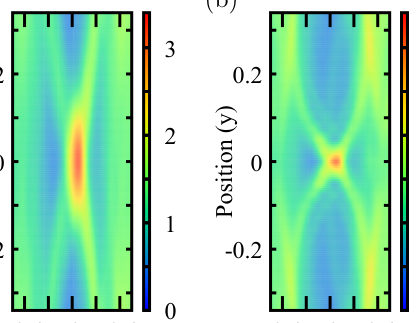
<figcaption class="paper-figure-caption"><b>Fig 4.</b> FIG. 5. Density plots for spatial variations of the LDOS spec- tra N(E, r) as a function of E and the distance from the vor- tex center. Vertical axis of (a) and (b) is, respectively, along the path r/R = (x, 0) and (0, y). Vortex center is located at (x, y) = (0, 0).</figcaption>
</figure>
<figure class="paper-figure-card">
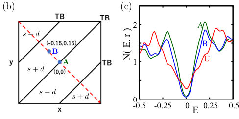
<figcaption class="paper-figure-caption"><b>Fig 5.</b> FIG. 6. (a) Spatial variation of pair potentials at a zero field H = 0. We show Re∆s(r) and Re∆d(r) as a function of x/R along a dash-dot line y = −x in (b). Im∆s(r) ∼0 and Im∆d(r) ∼0. (b) The square region of a unit cell in our calculation is schematically presented. The twin boundaries (TB) are located at diagonal solid lines, separating s + d and s−d wave pairing domains. Periodic boundary conditions are applied. (c) Spectra of LDOS N(E, r) as a function of energy E. Line A is for just on the twin boundary r = (0, 0), and line B is for a middle point r/R = (−0.15, 0.15) between two neighboring twin boundaries. The positions of A and B are also presented in (b). Line U is for N(E) in the...</figcaption>
</figure>
</div>

<p><strong>Summary.</strong> This theoretical work analyzes the electronic structure of vortices situated at twin boundaries in a nematic superconductor using the Bogoliubov-de Gennes theory. The research finds that the boundary induces fractional vortices and novel s +/- id wave components in the superconducting order parameter. This provides crucial insights into how structural defects interact with complex pairing symmetries in correlated superconducting materials.</p>
<p><strong>Why it may be interesting.</strong> The study of exotic superconducting phases, such as those exhibiting nematicity and complex pairing symmetries (like s +/- id), is highly relevant to understanding unconventional superconductivity in materials like iron-based superconductors, which often involve strong electronic correlations.</p>
<details>
<summary>Detailed structure</summary>
<p><strong>Main problem.</strong> The study investigates the local electronic states of vortices when they are trapped at twin boundaries within a nematic superconductor.</p>
<p><strong>Main result.</strong> The trapping of a single vortex at a twin boundary results in a bound pair of fractional vortices accompanied by weakly-induced s +/- id wave components, even though these components are absent in zero magnetic field.</p>
<p><strong>Method.</strong> The authors employed the Bogoliubov-de Gennes (BdG) theory using a tight-binding model to calculate the local density of states (LDOS) and pair potentials.</p>
<p><strong>Model / system.</strong> The system is a nematic superconductor, modeled on a square lattice with nematicity introduced via anisotropy in transfer integrals and attractive interactions. The superconductivity is described by an s +/- d wave pairing potential.</p>
<p><strong>Key observables.</strong> Local density of states (LDOS), pair potential components (s and d wave), and the vortex core structure.</p>
<p><strong>Important parameters / regimes.</strong> Nematic anisotropy, twin boundary structure, and the superconducting gap parameters ($\Delta_s, \Delta_d$).</p>
<p><strong>Assumptions / limitations.</strong> The model uses a simple tight-binding approximation and assumes spin-singlet pairing; it also notes that the model might fail to capture the full complexity of time-reversal symmetry breaking at the boundary.</p>
<p><strong>Figures summary.</strong> Figures illustrate the spatial structure of the pair potential components and the LDOS spectra, comparing vortex states with and without twin boundaries.</p>
<p><strong>Paper structure.</strong> The paper progresses by first establishing the theoretical framework (BdG theory, tight-binding model) and then analyzing the electronic states in different regimes: first, the vortex state without boundaries, followed by the analysis of the twin boundary state, culminating in the combined vortex-at-twin-boundary case.</p>
</details>
<details>
<summary>Abstract</summary>
<p>Local electronic states of vortices in an s $\pm$ d wave nematic superconductor are studied both in the absence and presence of twin boundaries. The Bogoliubov-de Gennes theory for a tight-binding model is used with its nematicity represented by the anisotropy in the transfer integrals and attractive interactions between the nearest-neighbor sites. We evaluate s and d wave components of the pair potentials and the local density of states, and analyze the effects of nematicity on the vortex core structures with/without twin boundaries. We find that a single vortex trapped at the twin boundary is composed of a bound pair of fractional vortices accompanied by weakly-induced s $\pm$ id wave components, despite that such s $\pm$ id wave components do not appear in a zero magnetic field. The calculated spatial structures of the local electronic states are compared with the vortex image measured by STM experiments in an iron-based superconductor FeSe.</p>
</details>
<p><sub><a href="#top">↑ back to top</a></sub></p>

<p><a id="paper-2608.29007"></a></p>
<h3 id="fractional-impurity-entropy-from-potential-scattering-in-a-free-electron-gas"><a href="http://arxiv.org/abs/2608.29007v1">Fractional Impurity Entropy from Potential Scattering in a Free Electron Gas</a></h3>
<p><strong>Authors:</strong> Syeda Neha Zaidi, Jukka I. Väyrynen<br>
<strong>Type:</strong> theory · <strong>Category:</strong> statistical mechanics · <strong>PDF:</strong> <a href="https://arxiv.org/pdf/2608.29007v1">https://arxiv.org/pdf/2608.29007v1</a><br>
<strong>Analysis basis:</strong> full PDF text, analyzed in chunks
<strong>Topic relevance:</strong> <code>analog quantum simulation</code> <strong>1/5</strong></p>
<div class="figure-strip-hint">↔ Scroll figures horizontally</div>
<div class="paper-figures-scroll">
<figure class="paper-figure-card">
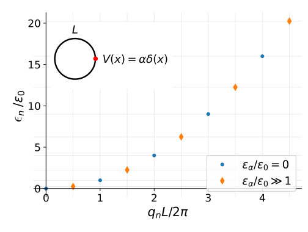
<figcaption class="paper-figure-caption"><b>Fig 1.</b> FIG. 1. Single-particle spectrum of free electrons confined to a one-dimensional ring of circumference L and scattering off a localized, repulsive delta-function potential of strength α (inset). Here, εα = α/L characterizes the impurity strength, while ε0 = π2/2mL2 is the characteristic finite-size energy scale for the quadratic dispersion given in Eq. (6). As εα/ε0 increases, the allowed momenta evolve from qnL/2π = n (blue points) to qnL/2π = n + 1</figcaption>
</figure>
<figure class="paper-figure-card">
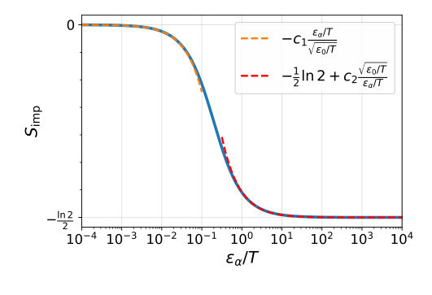
<figcaption class="paper-figure-caption"><b>Fig 2.</b> FIG. 2. Numerically evaluated impurity entropy (blue curve) as a function of the scattering potential strength εα = α/L for fixed ε0/T = 4.93×10−2. As the potential strength increases, the system undergoes an entropy change of Simp = −1</figcaption>
</figure>
<figure class="paper-figure-card">
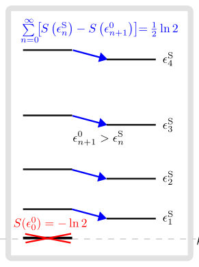
<figcaption class="paper-figure-caption"><b>Fig 3.</b> FIG. 3. Schematic evolution of the energy levels and the associated change in entropy as the scattering potential is changed. Left: the energy spectrum with the scattering po- tential turned off, i.e., εα/T = 0, with entropy S(0) = ln 2 + P∞ n=1 S(ϵ0 n), the first term coming from ground state degener- acy due to a zero-energy level (note chemical potential µ = 0 here). Boxed: Turning on εα/T removes the zero-energy state and shifts each excited level downwards. The former effect lowers the entropy by ln 2 while Eq. (26) shows the latter ef- fect contributes P∞ n=0  S(ϵS n) −S(ϵ0 n+1)  = 1</figcaption>
</figure>
<figure class="paper-figure-card">
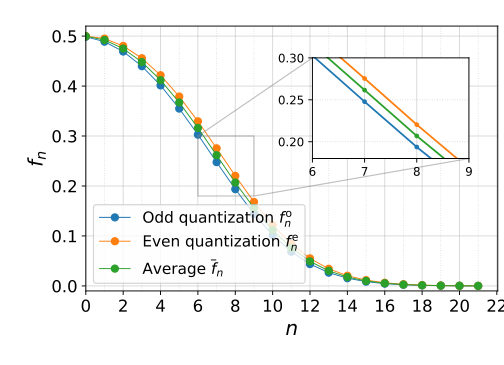
<figcaption class="paper-figure-caption"><b>Fig 4.</b> FIG. 4. The Fermi distributions f o n and f e n of a quadratic spectrum corresponding odd and even momentum quanti- zation condition, respectively. The average of these distri- butions f n = (f o n + f e n)/2 is also shown. Here, we fixed ε0/T = 4.93 × 10−3.</figcaption>
</figure>
<figure class="paper-figure-card">
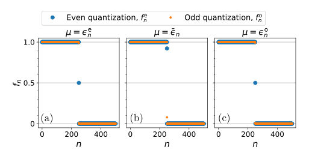
<figcaption class="paper-figure-caption"><b>Fig 5.</b> FIG. 6. The Fermi distributions of a quadratic dispersion for three values of the chemical potential are plotted for ε0/T = 4.93 × 10−3. In panels (a), (b), and (c), the chemical potential is fine-tuned to intersect with the even, average, and odd energy level associated with n = 225. For this n, the level spacing is large enough for the system to be in the effective zero temperature limit, so the Fermi distribution behaves like a step-function.</figcaption>
</figure>
</div>

<p><strong>Summary.</strong> This theoretical work shows that a simple system of free electrons scattering off an impurity can exhibit a universal fractional entropy change. This effect arises purely from the shift in allowed single-particle momenta from integer to half-integer quantization. The result suggests that such entropy signatures are not exclusively markers for strong correlations or topological order.</p>
<p><strong>Why it may be interesting.</strong> The finding suggests that signatures previously thought to require exotic physics (like non-Abelian anyons) can arise from simple boundary conditions or level quantization shifts, broadening the scope of what constitutes an 'entropic signature'.</p>
<details>
<summary>Detailed structure</summary>
<p><strong>Main problem.</strong> To demonstrate that fractional entropy changes can occur in simple, non-interacting systems (free electrons) without invoking strong electron correlations or topological order.</p>
<p><strong>Main result.</strong> The system exhibits a universal entropy change of $-rac{1}{2}\ln 2$ when the impurity strength is varied, which is attributed to a shift in single-particle momentum quantization from integer to half-integer values.</p>
<p><strong>Method.</strong> The entropy is calculated by analyzing the impurity partition function, $Z_{	ext{imp}}(\alpha) = Z(\alpha) / Z(0)$, and taking its derivative with respect to temperature.</p>
<p><strong>Model / system.</strong> The model is a free electron gas confined to a one-dimensional ring of circumference L, scattering off a repulsive point-like impurity of strength $\alpha$. The analysis compares spectra quantized by odd versus even integers.</p>
<p><strong>Key observables.</strong> Impurity entropy change ($S_{	ext{imp}}$) and the boundary entropy change ($\Delta S$).</p>
<p><strong>Important parameters / regimes.</strong> Temperature ($T$), impurity strength ($\alpha$), and the ratio of energy scales ($\epsilon_\alpha/T$ and $\epsilon_0/T$).</p>
<p><strong>Assumptions / limitations.</strong> The analysis relies on asymptotic limits (weak/strong scattering) and approximations like Taylor expansions and integral conversions.</p>
<p><strong>Figures summary.</strong> Figures illustrate the shift of allowed momenta from integer to half-integer quantization, and numerically evaluate the entropy change as a function of the impurity strength ratio.</p>
<p><strong>Paper structure.</strong> The paper first establishes the physical model and calculates the entropy change in the presence of an impurity. It then generalizes the analysis by comparing spectra quantized by odd versus even integers to derive a universal boundary entropy change, $\Delta S$.</p>
</details>
<details>
<summary>Abstract</summary>
<p>Fractional changes in entropy are often associated with strong electron correlations or non-Abelian anyons in topological systems. We show that neither condition is necessary -- a system of free electrons on a ring scattering off a repulsive point-like impurity undergoes a $k_B\ln\sqrt 2$ entropy change as the impurity strength is increased. This effect arises from a shift of allowed single-particle momenta from integer quantization to half-integer quantization, induced by the impurity. We show that this fractional entropy change is universal across a broad class of single-particle dispersions, demonstrating that such signatures can arise without strong correlations or topological order.</p>
</details>
<p><sub><a href="#top">↑ back to top</a></sub></p>

<p><a id="paper-2608.30600"></a></p>
<h3 id="layer-axial-phonons-and-dipolar-thermal-response-in-centrosymmetric-thin-films"><a href="http://arxiv.org/abs/2608.30600v1">Layer Axial Phonons and Dipolar Thermal Response in Centrosymmetric Thin Films</a></h3>
<p><strong>Authors:</strong> Madhubanti Mukherjee, Kapil Gope, Barun Ghosh<br>
<strong>Type:</strong> theory · <strong>Category:</strong> other · <strong>PDF:</strong> <a href="https://arxiv.org/pdf/2608.30600v1">https://arxiv.org/pdf/2608.30600v1</a><br>
<strong>Analysis basis:</strong> full PDF text, analyzed in chunks
<strong>Topic relevance:</strong> <code>analog quantum simulation</code> <strong>1/5</strong></p>
<div class="figure-strip-hint">↔ Scroll figures horizontally</div>
<div class="paper-figures-scroll">
<figure class="paper-figure-card">
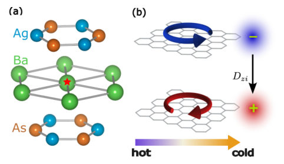
<figcaption class="paper-figure-caption"><b>Fig 1.</b> FIG. 1. (a) Schematic crystal structure of BaAgAs, composed of al- ternating Ba and Ag–As layers. The star marks the inversion cen- ter relating the top and bottom Ag–As layers. (b) Hidden layer- resolved phonon AM, illustrated by oppositely circulating arrows on the inversion-partner layers. An in-plane temperature gradient in- duces equal-and-opposite layer phonon AM accumulations, produc- ing a finite real-space phonon AM dipole despite the vanishing total phonon AM.</figcaption>
</figure>
<figure class="paper-figure-card">
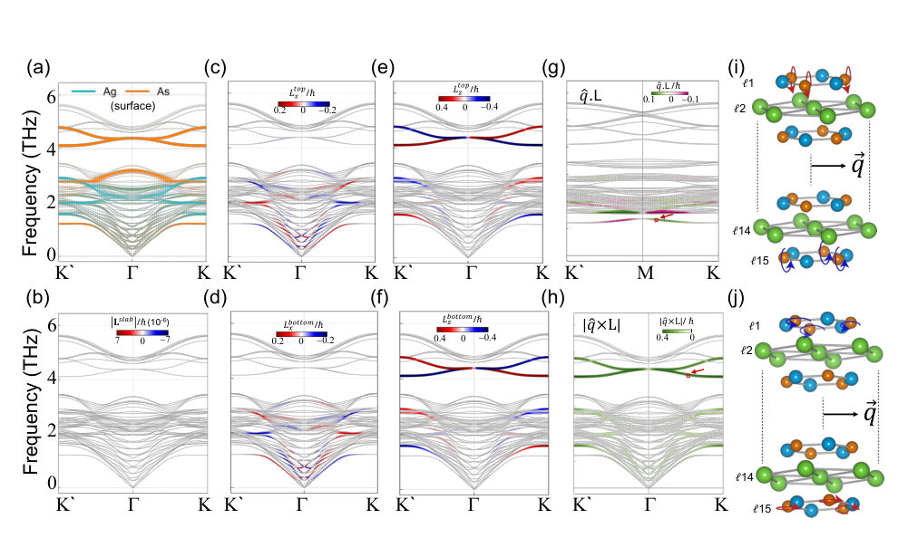
<figcaption class="paper-figure-caption"><b>Fig 2.</b> FIG. 2. (a) Contributions of the top- and bottom-layer Ag–As atoms to the phonon modes. (b) The total Lslab projected onto the phonon dispersions. Clearly Lslab , and therefore each component of the phonon AM, vanishes for the whole slab. (c), (e) Lx and Lz components, respectively, of the phonon AM contributed by the top Ag–As layer. (d), (f) The corresponding phonon AM components for the bottom Ag–As layer. (g), (h) Helicity and cycloidicity of the top Ag–As surface, respectively. (i), (j) Representative chiral and cycloidal atomic motions, respectively, for the phonon mode (denoted by the red arrows) along K′ −M −K and K′ −Γ −K. Red and blue circular arrows indicate opposite handedness...</figcaption>
</figure>
<figure class="paper-figure-card">
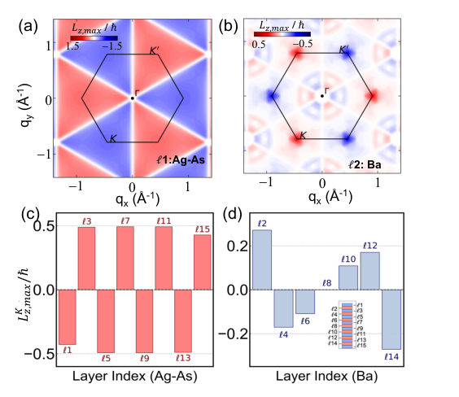
<figcaption class="paper-figure-caption"><b>Fig 3.</b> FIG. 3. (a) Lℓ z texture of the top Ag–As layer, ℓ1, branch n = 54, ω = 4.10 THz (b) Lℓ z texture of the adjacent top Ba layer ℓ2, branch n = 28 , ω = 2.29 THz; (c), (d) maximum Lz at K versus layer index for Ag–As and Ba layers, respectively. The Ag–As layers ex- hibit large phonon AM throughout the slab, whereas the phonon AM in the Ba layers decays with increasing distance from the surface.</figcaption>
</figure>
<figure class="paper-figure-card">
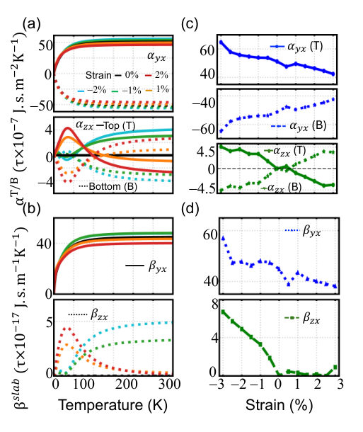
<figcaption class="paper-figure-caption"><b>Fig 4.</b> FIG. 4. (a) Temperature dependence of the layer-resolved αℓ yx, αℓ zx for −2% to +2% strains. Solid and dotted curves denote the top and bottom layers, with αT ij = −αB ij. (b) Corresponding temperature dependence of slab dipole responses βslab yx , and βslab zx . (c, d) αℓ ij and βslab ij at T = 300 K versus strain, showing the activation of symmetry-forbidden components.</figcaption>
</figure>
<figure class="paper-figure-card">
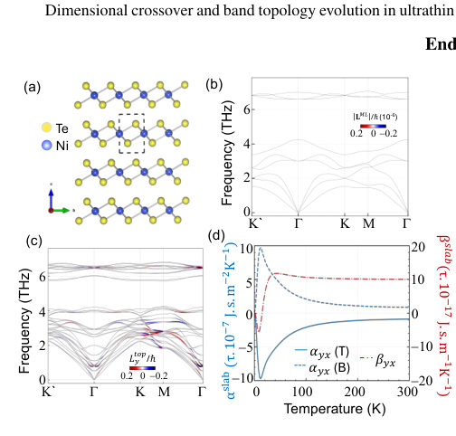
<figcaption class="paper-figure-caption"><b>Fig 5.</b> FIG. 5. (a) Side view of a four-layer NiTe2 slab with P¯3m1 sym- metry; the dashed box marks one monolayer. (b) Total phonon AM magnitude projected onto the monolayer phonon dispersion, which vanishes within numerical precision. (c) The y component of the top-layer phonon AM, Ltop y , projected onto the phonon dispersion of the fourlayer slab, showing finite hidden layer phonon AM. (d) Tem- perature dependence of the layer-resolved responses αℓ yx for the top (T) and bottom (B) layers and the whole-slab dipole response βslab yx .</figcaption>
</figure>
</div>

<p><strong>Summary.</strong> This work explores how centrosymmetric thin films can host measurable phonon angular momentum (AM) responses despite symmetry dictating zero total AM. By analyzing layer-resolved AM, the authors show that compensating local AMs create a finite, measurable dipole moment across the slab. This establishes these materials as promising platforms for studying hidden, multipolar phonon thermal responses.</p>
<p><strong>Why it may be interesting.</strong> While focused on condensed matter physics, the concept of symmetry-protected, hidden, and tunable multipolar responses in lattice vibrations (phonons) shares conceptual parallels with engineered topological responses in quantum materials, making it relevant to understanding emergent collective excitations.</p>
<details>
<summary>Detailed structure</summary>
<p><strong>Main problem.</strong> The study investigates the existence and physical consequences of 'hidden' layer-resolved phonon angular momentum (AM) in globally centrosymmetric thin films, despite the total phonon AM vanishing due to symmetry.</p>
<p><strong>Main result.</strong> The compensation of local, opposite phonon AM contributions across inversion-partner layers results in a finite, measurable real-space phonon AM dipole moment and layer-resolved thermal responses, which can be tuned by strain or substrate interfaces.</p>
<p><strong>Method.</strong> The research employs first-principles calculations to analyze phonon dispersions and calculate layer-resolved phonon AM textures and associated thermal response tensors.</p>
<p><strong>Model / system.</strong> The primary systems are centrosymmetric thin films, including BaAgAs, SrAgAs, and van der Waals materials like hBN and WSe2. The analysis compares bulk/monolayer structures to finite multilayer slabs and heterostructures.</p>
<p><strong>Key observables.</strong> Layer-resolved phonon AM ($\mathbf{L}_{\ell}$), total slab phonon AM ($\mathbf{L}_{	ext{slab}}$), layer-resolved thermal Edelstein-like response ($\alpha^{\ell}_{ij}$), and the real-space phonon AM dipole response ($eta^{	ext{slab}}_{ij}$).</p>
<p><strong>Important parameters / regimes.</strong> Uniaxial strain, temperature gradient, and the structural termination/interface (e.g., hBN substrate).</p>
<p><strong>Assumptions / limitations.</strong> The analysis relies on the constant phonon relaxation-time ($    au$) approximation.</p>
<p><strong>Figures summary.</strong> Figures illustrate the vanishing total phonon AM in bulk/monolayer structures but show finite, opposite AM in individual layers (e.g., Fig. 2(c)–(f)). They also demonstrate finite layer-resolved responses ($\alpha^{\ell}_{ij}$) and non-zero slab dipole moments ($eta^{	ext{slab}}_{ij}$) in finite slabs or heterostructures (e.g., Fig. 5, Fig. 6).</p>
<p><strong>Paper structure.</strong> The paper progresses by establishing the symmetry constraint ($\mathbf{L}_{	ext{slab}}=0$) in centrosymmetric bulk materials, then demonstrating how finite slab geometry or heterostructuring breaks this constraint locally, activating finite layer AM and measurable dipolar thermal responses.</p>
</details>
<details>
<summary>Abstract</summary>
<p>In nonmagnetic centrosymmetric materials, $\mathcal{PT}$ symmetry enforces vanishing total phonon angular momentum (phonon AM) at every wave vector, making them appear unsuitable as hosts of axial phonons. Here, using first-principles calculations for BaAgAs and representative van der Waal's layered materials, we show that centrosymmetric slabs can still host large hidden layer-resolved phonon AM with both chiral and cycloidal modes. This hidden phonon AM texture produces layer resolved phonon thermal Edelstein-like responses and a real-space phonon AM dipole response, both tunable by strain. Our results establish centrosymmetric layered materials as an exciting platform for hidden axial phonon and multipolar phonon thermal response.</p>
</details>
<p><sub><a href="#top">↑ back to top</a></sub></p>

<p><a id="paper-2608.30588"></a></p>
<h3 id="machine-learning-reveals-common-features-of-unconventional-superconductors-with-high-transition-temperatures"><a href="http://arxiv.org/abs/2608.30588v1">Machine learning reveals common features of unconventional superconductors with high transition temperatures</a></h3>
<p><strong>Authors:</strong> Haosheng Xu, Dongheng Qian, Yijun Yu, Jing Wang<br>
<strong>Type:</strong> theory · <strong>Category:</strong> strongly correlated electrons · <strong>PDF:</strong> <a href="https://arxiv.org/pdf/2608.30588v1">https://arxiv.org/pdf/2608.30588v1</a><br>
<strong>Analysis basis:</strong> full PDF text, analyzed in chunks
<strong>Topic relevance:</strong> <code>analog quantum simulation</code> <strong>1/5</strong></p>
<div class="figure-strip-hint">↔ Scroll figures horizontally</div>
<div class="paper-figures-scroll">
<figure class="paper-figure-card">
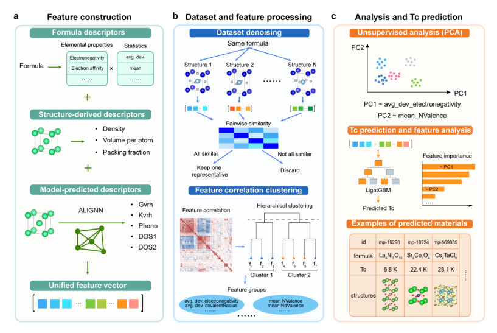
<figcaption class="paper-figure-caption"><b>Fig 1.</b> Figure 1. Overview of the machine-learning workflow. a, Construction of a unified 147-dimensional feature vector from composition-derived descriptors, structure-derived descriptors, and latent representations extracted from pre-trained ALIGNN models. b, Dataset curation through structure-aware filtering, and organization of the descriptors into feature groups by hierarchical clustering. c, Unsupervised PCA analysis, supervised Tc prediction with feature importance analysis, and candidate screening.</figcaption>
</figure>
<figure class="paper-figure-card">
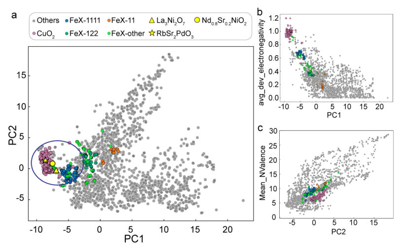
<figcaption class="paper-figure-caption"><b>Fig 2.</b> Figure 2. Unsupervised analysis of the superconducting materials space. a, Projection of the curated superconducting dataset onto the PC1–PC2 plane. Cu-based and iron-based families concentrate in a common region (ellipse), into which La3Ni2O7 (triangle), Nd0.8Sr0.2NiO2 (circle) and RbSr2PdO3 (star), all of which are outside the training set, also fall. b,c, Relationships between PC1 and avg dev Electronegativity (b) and between PC2 and mean NValence (c), with colors as in a.</figcaption>
</figure>
<figure class="paper-figure-card">
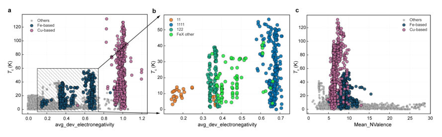
<figcaption class="paper-figure-caption"><b>Fig 3.</b> Figure 3. Dependence of Tc on the two leading descriptors. a, Tc versus avg dev Electronegativity. The inset shows the iron-based subfamilies separately. b, Tc versus mean NValence.</figcaption>
</figure>
<figure class="paper-figure-card">
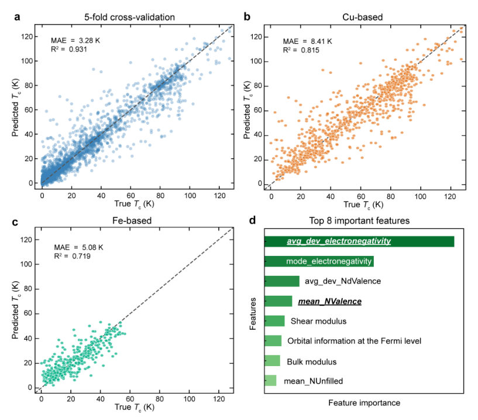
<figcaption class="paper-figure-caption"><b>Fig 4.</b> Figure 4. Supervised prediction of Tc. a, Predicted versus experimental Tc under five-fold cross-validation (MAE = 3.28 K, R2 = 0.931); the dashed line marks perfect prediction. b,c, Experimental and out-of-fold predicted Tc values for (b) cuprate and (c) iron-based superconductors obtained from five-fold cross-validation. d, The eight most important feature groups for Tc prediction.</figcaption>
</figure>
<figure class="paper-figure-card">
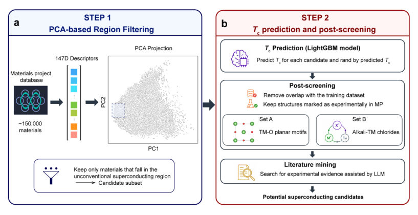
<figcaption class="paper-figure-caption"><b>Fig 5.</b> Figure 5. Two-step screening of potential superconducting candidates. Materials from the Materials Project database are first filtered by their position in the PC1–PC2 plane, and the retained candidates are then ranked by predicted Tc, post- screened into two targeted subsets (sets A and B), and examined through literature mining assisted by large language models.</figcaption>
</figure>
</div>

<p><strong>Summary.</strong> This work uses machine learning to bypass the need for a fundamental theory of high-Tc superconductivity. By analyzing structural and chemical features of known materials, the authors identified key empirical signatures—specifically large electronegativity deviation and intermediate valence electron counts—that characterize these complex superconductors. This data-driven prior allows for the prediction and prioritization of entirely new candidate materials.</p>
<p><strong>Why it may be interesting.</strong> While focused on solid-state materials, the use of ML to extract robust, generalizable descriptors from complex electronic and structural data mirrors approaches used in modeling strongly correlated quantum systems where first-principles calculations are intractable.</p>
<details>
<summary>Detailed structure</summary>
<p><strong>Main problem.</strong> To find a common, data-driven materials-space signature for high-Tc unconventional superconductors, as no broadly applicable predictive theory currently guides their discovery.</p>
<p><strong>Main result.</strong> The analysis revealed that high-Tc unconventional superconductors cluster in a materials space characterized by large electronegativity deviation and intermediate mean valence-electron numbers.</p>
<p><strong>Method.</strong> The study employed interpretable machine learning, integrating compositional, structural, and latent electronic representations to perform unsupervised clustering and supervised $T_c$ prediction.</p>
<p><strong>Model / system.</strong> The focus is on unconventional superconductors, particularly cuprate and iron-based families, analyzed using a unified feature vector combining 120+ dimensions from elemental properties, crystal structure, and ALIGNN-derived embeddings.</p>
<p><strong>Key observables.</strong> Critical temperature ($T_c$), average deviation of electronegativity, and mean number of valence electrons.</p>
<p><strong>Important parameters / regimes.</strong> Intermediate mean valence-electron number ($\approx 7-8$); large electronegativity deviation.</p>
<p><strong>Assumptions / limitations.</strong> The approach avoids assuming a particular microscopic pairing mechanism, relying instead on empirical correlations within the materials space.</p>
<p><strong>Figures summary.</strong> Figures illustrate the ML workflow, the clustering of superconducting materials in the feature space (PC1-PC2 plane), and the correlation of $T_c$ with the key descriptors.</p>
<p><strong>Paper structure.</strong> The paper follows a workflow: 1) Constructing a high-dimensional feature vector; 2) Curating the dataset; 3) Performing unsupervised analysis (PCA) to find common regions; and 4) Using supervised learning to confirm feature importance and prioritize new candidates.</p>
</details>
<details>
<summary>Abstract</summary>
<p>Superconductors with high critical temperatures that emerges beyond the phonon-mediated regime are usually considered unconventional in nature, yet unlike conventional superconductors, no broadly applicable predictive theory currently guides their discovery. Here, we use interpretable machine learning to uncover a common materials-space signature of high-$T_{\mathrm{c}}$ unconventional superconductors and develop a data-driven strategy for materials discovery. We construct a unified feature representation for each material by integrating compositional statistics, structural information, and latent representations from trained property-prediction models, followed by structure-aware filtering of an experimentally established superconducting dataset. Without using transition-temperature information, unsupervised analysis shows that cuprate and iron-based superconductors occupy a common region of materials space, characterized primarily by large electronegativity deviation and intermediate mean valence-electron number. A supervised $T_{\text{c}}$ model independently identifies the same descriptors as dominant features, providing complementary evidence for their relevance. Using this empirical materials-space prior together with the $T_{\text{c}}$ model, we prioritize candidate materials, recover recently discovered nickelate superconductors, and identify chemically distinct candidates for future investigation.</p>
</details>
<p><sub><a href="#top">↑ back to top</a></sub></p>

<p><a id="paper-2608.29771"></a></p>
<h3 id="magnetic-contacts-on-freestanding-superconducting-laalomath2000mathsrtiomath2001math-micromembranes"><a href="http://arxiv.org/abs/2608.29771v1">Magnetic contacts on freestanding superconducting LaAlO$_3$/SrTiO$_3$ micromembranes</a></h3>
<p><strong>Authors:</strong> Thies Jansen, Pinelopi Konstantinopoulou, Niklas Martin, Fabio Miletto Granozio, Alessia Sambri, Rasmus Bjørk, Felix Trier, Thomas S. Jespersen<br>
<strong>Type:</strong> experiment · <strong>Category:</strong> strongly correlated electrons · <strong>PDF:</strong> <a href="https://arxiv.org/pdf/2608.29771v1">https://arxiv.org/pdf/2608.29771v1</a><br>
<strong>Analysis basis:</strong> full PDF text, analyzed in chunks
<strong>Topic relevance:</strong> <code>quantum measurements</code> <strong>1/5</strong></p>
<div class="figure-strip-hint">↔ Scroll figures horizontally</div>
<div class="paper-figures-scroll">
<figure class="paper-figure-card">
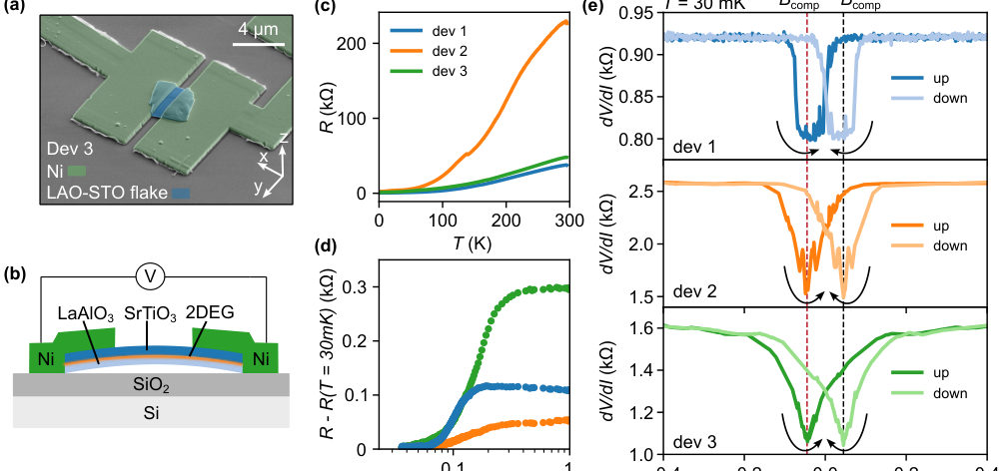
<figcaption class="paper-figure-caption"><b>Fig 1.</b> FIG. 1. (a) A false-coloured scanning electron micrograph of a LAO-STO micromembrane contacted with nickel contacts. The curvature of the micromembrane reveals that the STO is on top. (b) schematic of the device. (c) The two point resistance as function of the temperature from 300 K to 1 K for three different devices. Here the residual resistance at 30 mK, including the contact and filter resistance is subtracted. (d) The two point resistance as function of temperature from 1 K down to 30 mK revealing the superconducting state in all three devices. (e) Differential resistance as function of the out-of-plane magnetic field for positive and negative field sweep directions, displaying...</figcaption>
</figure>
<figure class="paper-figure-card">
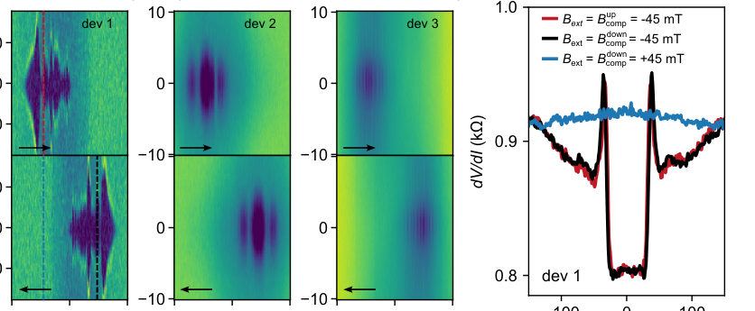
<figcaption class="paper-figure-caption"><b>Fig 2.</b> FIG. 2. (a-c) Differential resistance as function of current bias and magnetic field for the positive and negative sweeping direction for three different devices. The differential resistance maps reflect the symmetry R(Ibias, Bz) = R(Ibias, −Bz) (d) Differential resistance of device 1 as function of current bias and external magnetic field for three magnetic field sweeping histories. The blue and black curve show that drastically different superconducting states can be achieved at the same field, but with different sweeping directions. The blue and orange curve show that the same switching current is observed at different magnetic fields.</figcaption>
</figure>
<figure class="paper-figure-card">
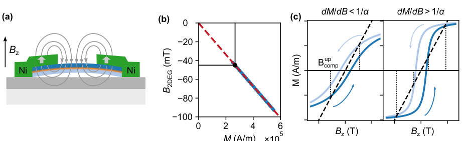
<figcaption class="paper-figure-caption"><b>Fig 3.</b> FIG. 3. (a) Schematic displaying the field lines for magnetized contacts in the positive z-direction. (b) Results of the finite element simulations relating the the effective field in the 2DEG at Bz = 0 to the magnetization of the contacts. (c) The condition that B2DEG(Bz) = 0, is qualitatively obtained by the crossings of Mz with the dashed line Bz/α. Depending on the steepness and remanence of Mz(Bz), B2DEG(Bz) vanishes once or three times for a single sweep direction.</figcaption>
</figure>
<figure class="paper-figure-card">
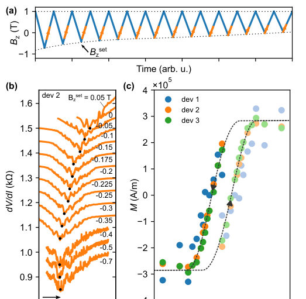
<figcaption class="paper-figure-caption"><b>Fig 4.</b> FIG. 4. By avoiding complete magnetization reversal of the nickel contacts, the effective magnetic field experienced by the 2DEG can be continuously tuned. (a) shows schematically the applied magnetic field as function of time. The applied field is set at 1 T to initialize the magnetization and subsequently swept to a value Bset z &lt; 1 T to partially reverse the magneti- zation. On the back sweep, the traces in (b) are measured, as indicated by the orange marked lines. (c) Effective magneti- zation within our effective field model of the nickel contacts, Mz, as a function of Bset z .</figcaption>
</figure>
<figure class="paper-figure-card">
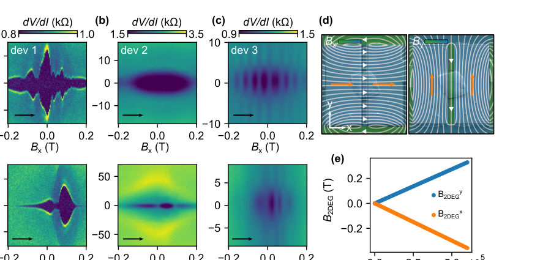
<figcaption class="paper-figure-caption"><b>Fig 5.</b> FIG. 5. (a-c) Differential resistance as function of bias and magnetic field in the x and y direction for three devices. The qualitative difference between the symmetric Bx sweeps and asymmetric By sweeps can be explained by the difference in sign of the effective field experienced by the 2DEG with respect to the magnetization as illustrated in (d). (e) Finite element simulation of the effective field in the x and y direction with a different sign as function of the magnetization in the x and y direction respectively.</figcaption>
</figure>
</div>

<p><strong>Summary.</strong> This work demonstrates the feasibility of using ferromagnetic contacts on superconducting LaAlO3/SrTiO3 membranes for superconducting spintronics. By measuring transport properties, the researchers showed that the superconducting state is highly sensitive to the magnetic history of the nickel contacts. This establishes a platform for studying spin injection and magnetic control in oxide superconductors.</p>
<p><strong>Why it may be interesting.</strong> The study directly investigates the interplay between magnetism and superconductivity in complex oxide interfaces, which is a key area for understanding unconventional superconductivity and spin-charge coupling in condensed matter systems.</p>
<details>
<summary>Detailed structure</summary>
<p><strong>Main problem.</strong> The primary challenge addressed is integrating ferromagnetic contacts with the superconducting two-dimensional electron gas (2DEG) at the LaAlO3/SrTiO3 interface for superconducting spintronics.</p>
<p><strong>Main result.</strong> Superconductivity is preserved in the presence of ferromagnetic contacts, and the superconducting state is strongly controlled by the magnetic history of these contacts, allowing the 2DEG to act as a sensitive magnetometer.</p>
<p><strong>Method.</strong> Low-temperature transport measurements, specifically measuring differential resistance (dV/dI) as a function of applied magnetic field and current bias, were used to probe the superconducting state.</p>
<p><strong>Model / system.</strong> The physical system is a superconducting 2DEG formed at the LAO-STO interface, realized in freestanding micromembranes contacted by ferromagnetic nickel. The physics is modeled using an effective field approach that accounts for the stray magnetic field generated by the contacts.</p>
<p><strong>Key observables.</strong> Superconducting transition temperature, hysteretic dependence of dV/dI on magnetic field, and the switching current (Ic).</p>
<p><strong>Important parameters / regimes.</strong> Low temperatures (down to 30 mK), magnetic fields (up to 6 T), and the magnetic history/magnetization state of the Ni contacts.</p>
<p><strong>Assumptions / limitations.</strong> The superconducting state is sensitive to the effective magnetic field generated by the combination of the external field and the contact magnetization.</p>
<p><strong>Figures summary.</strong> Figures show SEM images of the device, resistance vs. temperature curves confirming superconductivity, and detailed dV/dI maps showing hysteretic dependence on applied magnetic fields and current bias.</p>
<p><strong>Paper structure.</strong> The paper establishes the device platform, presents transport measurements demonstrating superconductivity coexistence with ferromagnetism, and then develops an effective field model to quantify how the contact magnetization dictates the superconducting response.</p>
</details>
<details>
<summary>Abstract</summary>
<p>The superconducting two-dimensional electron gas (2DEG) at the LaAlO$_3$/SrTiO$_3$ (LAO-STO) interface is a promising platform for superconducting spintronics, however, integrating ferromagnetic contacts with the superconducting 2DEG remains challenging. Here, we realize superconducting LAO-STO micromembrane devices contacted by ferromagnetic nickel contacts through a side-contact geometry. Low-temperature transport measurements demonstrate that superconductivity is preserved in the presence of the ferromagnetic contacts. We show that the superconducting state is strongly influenced by the magnetic history of the nickel contacts, which generates a tunable effective magnetic field in the 2DEG. Through an effective field model, the magnetization of the contacts can be inferred from the maximum superconducting response. Our results establish ferromagnetically contacted LAO-STO as a platform for future investigations of spin injection into oxide superconductors and provide a route towards superconducting spintronic devices based on complex oxide interfaces.</p>
</details>
<p><sub><a href="#top">↑ back to top</a></sub></p>

<p><a id="paper-2608.28959"></a></p>
<h3 id="surface-mediated-frequency-aging-beyond-quality-factor-saturation-in-an-alscn-on-silicon-resonator"><a href="http://arxiv.org/abs/2608.28959v1">Surface-mediated frequency aging beyond quality-factor saturation in an AlScN-on-silicon resonator</a></h3>
<p><strong>Authors:</strong> S M Enamul Hoque Yousuf, Mahmudul Hasan, Shruti Mishra, Sourav Mukherjee, Jinghan Gao, Roozbeh Tabrizian<br>
<strong>Type:</strong> experiment · <strong>Category:</strong> other · <strong>PDF:</strong> <a href="https://arxiv.org/pdf/2608.28959v1">https://arxiv.org/pdf/2608.28959v1</a><br>
<strong>Analysis basis:</strong> full PDF text, analyzed in chunks
<strong>Topic relevance:</strong> <code>quantum measurements</code> <strong>1/5</strong></p>
<div class="figure-strip-hint">↔ Scroll figures horizontally</div>
<div class="paper-figures-scroll">
<figure class="paper-figure-card">

<figcaption class="paper-figure-caption"><b>Fig 1.</b> Figure 1. AlScN-on-Si Lamé-mode resonator and pressure-dependent response. (a) Optical micrograph of the resonator. The phosphorus-doped silicon body is suspended by phononic crystal tethers inside a 10 µm sidewall gap, and the top molybdenum (Mo) electrode is patterned on the AlScN film to provide all-electrical actuation and readout. Scale bar: 150 μm (b) Simulated mode shape of the third order out-of-plane cross-sectional Lamé mode at 64.21 MHz. (c) Schematic of the measurement system showing the device under test (DUT) inside an ExploraVac Max chamber with closed-loop pressure and temperature control and is driven and read out by a Zurich UHFLI lock-in amplifier. (d) Transmission...</figcaption>
</figure>
<figure class="paper-figure-card">
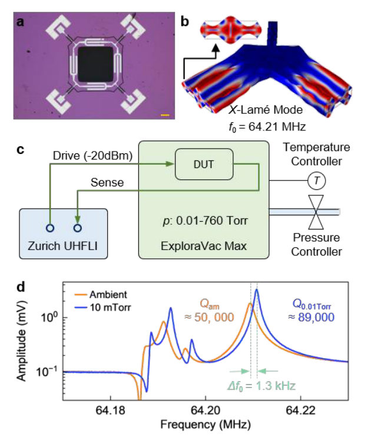
<figcaption class="paper-figure-caption"><b>Fig 2.</b> Figure 1a shows an optical image of the degenerately phosphorus-doped single-crystal silicon</figcaption>
</figure>
<figure class="paper-figure-card">
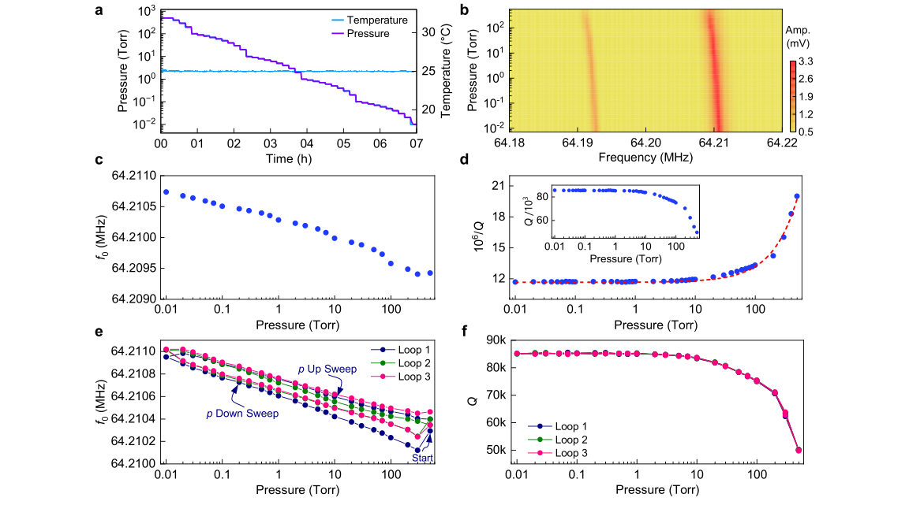
<figcaption class="paper-figure-caption"><b>Fig 3.</b> Figure 2. Pressure-dependent f0 and Q at 25 °C. (a) Applied pressure is stepped from 500 Torr to 0.01 Torr over time. The right axis shows that the measured temperature remains at 25 °C throughout the experiment. (b) Resonance amplitude color map resolving two nearby modes from distinct arms of the resonator. (c) f0 rises monotonically as pressure falls, gaining approximately 1.3 kHz from 500 to 0.01 Torr. (d) Extracted Q versus p demonstrates that Q remains near its intrinsic ceiling (≈ 8.5 × 104) below ~1 Torr and decreases with increasing pressure, reaching approximately half this value near 500 Torr. (e) Three consecutive up-and-down pressure loops show that f0 traces a repeatable...</figcaption>
</figure>
<figure class="paper-figure-card">

<figcaption class="paper-figure-caption"><b>Fig 4.</b> Figure 3. High-vacuum frequency response measured at 25 °C. (a) Chamber pressure and PLL-tracked resonance frequency f0 during a pump-isolation transient. After 1 h of evacuation, the pump is isolated from the chamber, and the pressure rises from approximately 10-6 to 5×10-4 Torr over 900 s while f0 decreases monotonically. (b) Fractional frequency shift Δf0/f0 as a function of the simultaneously measured pressure. The fractional frequency shift remains nearly constant below approximately 10-5 Torr and reaches -800 ppb at 5×10-4 Torr.</figcaption>
</figure>
<figure class="paper-figure-card">

<figcaption class="paper-figure-caption"><b>Fig 5.</b> Figure 4. Pressure-step relaxation kinetics at 68.8 C frequency turnover. (a) Full pressure cycle and the simultaneously recorded f0, with first-order temperature sensitivity suppressed. (b) On the pressure up-sweep, Δf0/f0 falls through adsorption-induced mass loading. Dashed curves show stretched-exponential fits, with larger relaxation amplitudes at lower pressures. The initial 0.01 Torr trace instead rises, reflecting desorption of adsorbates accumulated during the preceding atmospheric exposure. (c) On the pressure down-sweep, Δf0/f0 rises as adsorbate mass is released, with the relaxation amplitude increasing as pressure decreases and reaching approximately 1400 ppb at 0.01 Torr. (d)...</figcaption>
</figure>
</div>

<p><strong>Summary.</strong> The study investigates the stability of a micro-resonator by measuring both its energy dissipation (Q) and its resonant frequency (f0) across varying vacuum pressures. The key finding is that while Q can reach a saturation limit, the frequency f0 continues to drift slowly over hours due to surface adsorption/desorption processes. Therefore, simply ensuring low damping is insufficient for high-precision vacuum applications; surface chemistry must also be controlled.</p>
<p><strong>Why it may be interesting.</strong> This work provides a rigorous experimental framework for characterizing the stability of mechanical oscillators in vacuum, distinguishing between simple damping loss and complex, slow surface adsorption/desorption dynamics, which is crucial for high-precision sensing.</p>
<details>
<summary>Detailed structure</summary>
<p><strong>Main problem.</strong> To determine if quality-factor (Q) saturation alone is sufficient to qualify vacuum packaging for precision mechanical frequency references, given that surface-mediated frequency aging can be a dominant factor.</p>
<p><strong>Main result.</strong> Gas-damping equilibrium and frequency equilibrium are established as distinct states; package specifications must constrain surface-mediated frequency aging, not just Q saturation.</p>
<p><strong>Method.</strong> The authors measured both the quality factor (Q) and the resonance frequency (f0) of a micro-resonator across wide pressure ranges, analyzing transient relaxation kinetics and long-term phase-locked loop tracking.</p>
<p><strong>Model / system.</strong> The system is a 64.21 MHz AlScN-on-silicon cross-sectional Lamé-mode resonator, which is suspended and measured in a vacuum chamber allowing pressure control from 0.01 to 760 Torr.</p>
<p><strong>Key observables.</strong> Quality factor (Q), resonance frequency (f0), fractional frequency shifts (up to 1.9 ppm), and time-deviation (TDEV) over hours.</p>
<p><strong>Important parameters / regimes.</strong> Pressure range (0.01 to 760 Torr), temperature (25 °C and 68.8 °C), and relaxation kinetics (stretched-exponential).</p>
<p><strong>Assumptions / limitations.</strong> The analysis assumes that the sidewall gap is not modulated by resonant motion, and that the temperature is controlled at a point suppressing first-order thermal sensitivity.</p>
<p><strong>Figures summary.</strong> Figures show resonator micrographs, transmission spectra comparing ambient vs. vacuum conditions, and time-evolution plots tracking frequency relaxation and TDEV over extended periods.</p>
<p><strong>Paper structure.</strong> The paper systematically compares the pressure dependence of Q (showing reversible gas damping) versus f0 (showing history-dependent relaxation), culminating in a long-term phase-locked loop analysis to distinguish the two equilibrium states.</p>
</details>
<details>
<summary>Abstract</summary>
<p>Vacuum package integrity in micro- and nanoelectromechanical resonators is commonly assessed through the quality factor Q, although Q probes residual-gas damping rather than the surface-state evolution that can govern frequency aging. Here, we disentangle the pressure responses of Q and the resonance frequency f0 in a 64.21 MHz Al0.7Sc0.3N-on-silicon cross-sectional Lamé-mode resonator between 0.01 to 760 Torr. Measurements at 25 °C and at the 68.8°C frequency turnover, where first-order thermal sensitivity is suppressed, reveal widely separated equilibration timescales. Following each pressure step, Q reaches a reversible, history-independent steady value on the pressure-control timescale and approaches a fitted pressure-independent ceiling of 8.5e4 below approximately 1 Torr. By contrast, f0 responds measurably down to 1e-5 Torr and remains history-dependent, relaxing for hours at fixed pressure. The transients follow stretched-exponential kinetics, consistent with a broad distribution of surface relaxation rates, and individual pressure steps produce fractional frequency shifts as large as 1.9 ppm. Ten-hour phase-locked measurements show a common short-term time-deviation floor near 1e-10 s from 0.01 to 100 Torr, whereas residual deterministic relaxation dominates at long averaging times; at 760 Torr, gas damping degrades short-term tracking through the reduced Q. These results establish gas-damping equilibrium and frequency equilibrium as distinct states. Quality-factor saturation alone is therefore insufficient to qualify vacuum packaging for precision mechanical frequency references; package specifications must also constrain surface-mediated frequency aging.</p>
</details>
<p><sub><a href="#top">↑ back to top</a></sub></p>
<h3 id="other-secondary-papers-10">Other secondary papers (10)</h3>
<details>
<summary>Show other secondary papers</summary>

<p><a id="paper-2608.30001"></a></p>
<h3 id="chemical-perspectives-on-cuprate-superconductivity-hole-protected-spin-dimers-as-d-wave-cooper-pairs"><a href="http://arxiv.org/abs/2608.30001v1">Chemical Perspectives on Cuprate Superconductivity: Hole-Protected Spin Dimers as d Wave Cooper Pairs</a></h3>
<p><strong>Authors:</strong> Myung-Hwan Whangbo, Reinhard K. Kremer<br>
<strong>Type:</strong> theory · <strong>Category:</strong> strongly correlated electrons · <strong>PDF:</strong> <a href="https://arxiv.org/pdf/2608.30001v1">https://arxiv.org/pdf/2608.30001v1</a><br>
<strong>Analysis basis:</strong> full PDF text, analyzed in chunks</p>
<div class="figure-strip-hint">↔ Scroll figures horizontally</div>
<div class="paper-figures-scroll">
<figure class="paper-figure-card">

<figcaption class="paper-figure-caption"><b>Fig 1.</b> Fig. 3. (a) 33 array of hole-free CuO4 units. (b) Hole-doped CuO4 unit surrounded by eight hole-</figcaption>
</figure>
<figure class="paper-figure-card">

<figcaption class="paper-figure-caption"><b>Fig 2.</b> Fig. 5. (a) Large square aggregate formed from a very wide k-stripe. (b) Large square aggregate</figcaption>
</figure>
<figure class="paper-figure-card">

<figcaption class="paper-figure-caption"><b>Fig 3.</b> Fig. 6. Square-growth of hole-aggregates: (a) HM unit. (b) 22 aggregate of four HM units. (c)</figcaption>
</figure>
<figure class="paper-figure-card">

<figcaption class="paper-figure-caption"><b>Fig 4.</b> Fig. 7. (a) CDW and SDW character of an AHD chain, where the protected spin dimers are</figcaption>
</figure>
<figure class="paper-figure-card">

<figcaption class="paper-figure-caption"><b>Fig 5.</b> Fig. 8. Simplified notations for describing the features of CDW and SDW that occur in the AHD</figcaption>
</figure>
</div>
<p><strong>Summary.</strong> This theoretical work proposes that the d-wave Cooper pair in cuprate superconductors has a specific real-space structure: an antiferromagnetically coupled spin dimer protected by an AHD. By analyzing how holes aggregate in the material, the authors suggest this structure naturally explains the coexistence and interplay between superconductivity, charge density waves, and the pseudogap phase.</p>
<p><strong>Why it may be interesting.</strong> The focus on real-space structural motifs (dimers, chains) to explain macroscopic quantum phenomena like superconductivity is highly relevant to understanding emergent order in strongly correlated quantum materials.</p>
<details>
<summary>Detailed structure</summary>
<p><strong>Main problem.</strong> The paper aims to determine the real-space structure of the d-wave Cooper pair responsible for high-Tc superconductivity in cuprates.</p>
<p><strong>Main result.</strong> The authors propose that the d-wave Cooper pair is an antiferromagnetically coupled spin dimer protected within an antiferromagnetic hole dimer (AHD).</p>
<p><strong>Method.</strong> The analysis uses a 'chemical' perspective, examining the phase separation and aggregation of hole-doped CuO4 units to deduce the pair's structure.</p>
<p><strong>Model / system.</strong> The system is hole-doped CuO2 layers in cuprate superconductors, modeled by analyzing the aggregation of hole-doped CuO4 units into structures like AHDs and AHD chains.</p>
<p><strong>Key observables.</strong> Short coherence length ($\xi$), energy gaps ($\Delta_{	ext{pg}}, \Delta_{	ext{sc}}, \Delta_{	ext{nir}}$), and the segregation-pressure index ($   ext{I}_{sp}$).</p>
<p><strong>Important parameters / regimes.</strong> Doping concentration ($p$), temperature ($T$), and the ratio of hole-doped to hole-free units.</p>
<p><strong>Assumptions / limitations.</strong> The analysis assumes that the short coherence length allows for a real-space structural determination of the Cooper pair, analogous to chemical structure determination.</p>
<p><strong>Figures summary.</strong> Figures illustrate the schematic views of hole-doped/hole-free units, the formation of protected holes, and the resulting aggregates (AHDs, chains, stripes).</p>
<p><strong>Paper structure.</strong> The paper progresses by identifying the physical constraints (short $\xi$, phase separation) and proposing the AHD structure, which is then used to explain multiple puzzling experimental observations regarding CDW, SDW, and the superconducting gap.</p>
</details>
<details>
<summary>Abstract</summary>
<p>The observation that the coherence lengths in cuprate superconductors are extremely small motivated us to search for its real-space structure by examining the consequence of hole-doping in CuO4 units in cuprates. We analyzed aggregates of hole-doped CuO4 units that phase-separate from hole-doped CuO2 layers in terms of their segregation-pressure indices defined in this work. Our search suggests that each d-wave Cooper pair is an antiferromagnetically coupled spin dimer protected in an antiferromagnetic hole dimer (AHD), and that the antiferromagnetic chains of AHDs provide channels through which such spin dimers can move collectively without perturbation. Based on these suggestions and their implications, we examined the causes for several seemingly puzzling observations on cuprate superconductors to find that they are naturally explained by the suggestions.</p>
</details>
<p><sub><a href="#top">↑ back to top</a></sub></p>

<p><a id="paper-2608.29873"></a></p>
<h3 id="chiral-superconductors-and-competing-states-across-a-lifshitz-transition-in-rhombohedral-pentalayer-graphene"><a href="http://arxiv.org/abs/2608.29873v1">Chiral superconductors and competing states across a Lifshitz transition in rhombohedral pentalayer graphene</a></h3>
<p><strong>Authors:</strong> Chuanqi Zheng, Cheng Xu, Chushan Li, Chenyu Zhang, Zijing Zhang, Kenji Watanabe, Takashi Taniguchi, Hao Yang, Dandan Guan, Liang Liu, Shiyong Wang, Yaoyi Li, Hao Zheng, Canhua Liu, Jinfeng Jia, Shengwei Jiang, Zhiwen Shi, Guorui Chen, Fengcheng Wu, Yang Zhang, Tingxin Li, Xiaoxue Liu<br>
<strong>Type:</strong> both · <strong>Category:</strong> strongly correlated electrons · <strong>PDF:</strong> <a href="https://arxiv.org/pdf/2608.29873v1">https://arxiv.org/pdf/2608.29873v1</a><br>
<strong>Analysis basis:</strong> full PDF text, analyzed in chunks</p>
<div class="figure-strip-hint">↔ Scroll figures horizontally</div>
<div class="paper-figures-scroll">
<figure class="paper-figure-card">

<figcaption class="paper-figure-caption"><b>Fig 1.</b> Fig. 1 | Transport phase diagram of moiréless RPG. a, Schematic of the dual-graphite-gated RPG device. b, Longitudinal resistance Rxx as a function of carrier density n and displacement field D, measured at B⊥ = 0 T and T = 10 mK. c, Schematic phase diagram corresponding to b, showing different spontaneous isospin-symmetry-broken states. LAF, SM, LPI, WC, AQM, CQM, HM and FM denote the layer-antiferromagnetic state, semimetallic state, layer-polarized insulator, Wigner crystal, annular quarter metal, circular quarter metal, half metal and full metal, respectively. CSC1, CSC2 and SC3 denote three superconducting states. d, Calculated highest valence and lowest conduction bands of...</figcaption>
</figure>
<figure class="paper-figure-card">

<figcaption class="paper-figure-caption"><b>Fig 2.</b> Fig. 2 | Perpendicular magnetic-field evolution of the n-D phase diagram. a-h, Symmetrized longitudinal resistance Rxx (a,c,e,g) and anti-symmetrized Hall resistance Rxy (b,d,f,h) as functions of carrier density n and displacement field D, measured at T = 10 mK and different perpendicular magnetic fields B⊥, as indicated in each panel. The contours of CSC1 and CSC2, extracted from the B⊥ = 0.1 T map, are outlined by gray dashed lines and overlaid on the Rxx maps at B⊥ = 1 T (c), 2 T (e), and 4 T (g). i, Calculated Berry curvature Ω (blue) and self-rotation orbital magnetic moment 𝑚𝑚𝑆𝑆𝑆𝑆 (red) of the lowest conduction band in RPG at Δ = 135 meV, along a straight cut through K oriented 30°...</figcaption>
</figure>
<figure class="paper-figure-card">

<figcaption class="paper-figure-caption"><b>Fig 3.</b> Fig. 3 | Fermiology-dependent critical magnetic fields of CSC1 and CSC2. a,b, Rxx maps as functions of n and B⊥ measured at T = 10 mK, and fixed displacement fields D = 0.935 V/nm (a) and D = 1.05 V/nm (b). The corresponding normalized FFT spectra, calculated over B⊥ = 1.5 T - 8 T for a and 1.5 T - 6 T for b, are shown alongside each Rxx-n-B⊥ map. The red dashed lines in a denote the RQH states. c, d, Rxx maps as functions of n and T, measured at B⊥ = 0 T, and fixed displacement fields D = 0.935 V/nm (c) and D = 1.05 V/nm (d), respectively. e, Rxx as a function of T at B⊥ = 0 T for representative points in CSC1 (n = 0.65 × 1012 cm-2, D = 0.935 V/nm) and CSC2 (n = 0.87 × 1012 cm-2, D = 1.05...</figcaption>
</figure>
<figure class="paper-figure-card">

<figcaption class="paper-figure-caption"><b>Fig 4.</b> Fig. 4 | Cascade of RQH states near the AQM-CQM Lifshitz boundary. a-d, Rxx (a,c) and Rxy (b,d) maps as functions of n and D, measured at B⊥ = 5 T (a,b) and 8 T (c,d). Dashed contours highlight the RQH states, with the corresponding Chern numbers indicated in the Rxy maps. Landau-level filling factors νLL are shown along the top axes of the Rxy maps in b and d. e, Rxx and |Rxy| as a function of νLL at D = 0.935 V/nm, corresponding to the dashed line in d. The QHE and RQH states are labeled. f, Temperature dependence of Rxx and |Rxy| near the C = 3 RQH states.</figcaption>
</figure>
</div>
<p><strong>Summary.</strong> This work investigates chiral superconductivity in rhombohedral graphene, showing that the electronic structure undergoes a Lifshitz transition between circular and annular Fermi surfaces. This topological change is crucial, as it dictates the stability and nature of the competing superconducting and quantum Hall states. The findings establish Fermi-surface topology as the primary control knob for realizing and tuning these exotic correlated quantum phases.</p>
<p><strong>Why it may be interesting.</strong> The strong coupling between electronic topology (Fermi surface geometry) and emergent superconductivity provides a concrete, tunable platform for studying correlated quantum phases, relevant to understanding unconventional superconductivity in 2D materials.</p>
<details>
<summary>Detailed structure</summary>
<p><strong>Main problem.</strong> The study maps the normal-state electronic structure surrounding chiral superconductivity and determines how Fermi-surface topology controls this exotic superconducting state in rhombohedral graphene.</p>
<p><strong>Main result.</strong> The Lifshitz transition between circular and annular Fermi surfaces is identified as the key control parameter, leading to two distinct superconducting phases with different magnetic field stabilities.</p>
<p><strong>Method.</strong> The research combines quantum oscillation measurements (SdH) to map the Fermi surface, transport measurements ($R_{xx}, R_{xy}$) to trace phase boundaries, and theoretical calculations of pairing tendencies.</p>
<p><strong>Model / system.</strong> The system is rhombohedral pentalayer graphene (RPG), an electrically tunable platform exhibiting strong Coulomb interactions and nontrivial quantum geometry.</p>
<p><strong>Key observables.</strong> Quantum oscillation frequencies, effective mass ($m^*$), superconducting transition temperatures ($T_c$), and the location of the Lifshitz transition boundary in the $n-D$ phase diagram.</p>
<p><strong>Important parameters / regimes.</strong> Carrier density ($n$), perpendicular electric field ($D$), and perpendicular magnetic field ($B_{\perp}$); the transition is governed by the Fermi surface topology (Circular vs. Annular).</p>
<p><strong>Assumptions / limitations.</strong> The analysis assumes that the observed superconducting phases are dictated by the underlying Fermi-surface topology near the Lifshitz transition.</p>
<p><strong>Figures summary.</strong> Figures map the complex phase diagram showing transitions between various correlated states (CQM, AQM, SC domes) and illustrate the systematic shift of the Lifshitz boundary with $B_{\perp}$.</p>
<p><strong>Paper structure.</strong> The paper systematically maps the phase diagram by first identifying the Lifshitz transition, then analyzing the distinct superconducting domes (CSC1 and CSC2) on either side, and finally using calculations to confirm the role of Fermi-surface geometry in determining magnetic field robustness.</p>
</details>
<details>
<summary>Abstract</summary>
<p>Rhombohedral multilayer graphene hosts a distinctive low-energy electronic structure in which strong Coulomb interactions and nontrivial quantum geometry intertwine to generate exotic quantum states. Recent experiments reported signatures of chiral superconductivity in electron-doped rhombohedral multilayer graphene within the spin- and valley-polarized regime. Here we map the normal-state fermiology surrounding chiral superconductivity in rhombohedral pentalayer graphene. Quantum oscillation measurements reveal an electrically controlled Lifshitz transition between a simply-connected circular quarter-metal Fermi surface and an annular quarter-metal Fermi surface. The Lifshitz boundary itself shifts with perpendicular magnetic field, consistent with the strongly momentum-dependent orbital magnetic moment of the low-energy band. Approaching the transition from either side, the electron effective mass becomes strongly enhanced, implying the formation of a nearly dispersionless band bottom and a strongly reduced kinetic-energy scale. This singular electronic structure produces a regime of exceptionally strong instability in which chiral superconductivity competes with Wigner crystalline phases and reentrant quantum Hall states. In particular, two superconducting regions with signatures of orbital time-reversal-symmetry breaking lie on opposite sides of the Lifshitz boundary and have comparable transition temperatures, yet the annular-side state is suppressed by a substantially smaller perpendicular magnetic field. Our calculation finds comparable chiral pairing tendencies on the two parent Fermi surfaces while producing a much lower orbital-Zeeman pair-breaking scale and an additional finite-momentum pairing tendency for the annular state. These results identify Fermi-surface topology as a key control parameter for chiral superconductivity in rhombohedral graphene.</p>
</details>
<p><sub><a href="#top">↑ back to top</a></sub></p>

<p><a id="paper-2608.28928"></a></p>
<h3 id="chiral-tubular-magnonic-crystals-with-periodic-dzyaloshinskii-moriya-interaction"><a href="http://arxiv.org/abs/2608.28928v1">Chiral Tubular Magnonic Crystals with Periodic Dzyaloshinskii--Moriya Interaction</a></h3>
<p><strong>Authors:</strong> P. Contreras-Gallardo, J. Flores-Farias, B. Mimica-Figari, V. Puliafito, P. Landeros, R. A. Gallardo<br>
<strong>Type:</strong> theory · <strong>Category:</strong> other · <strong>PDF:</strong> <a href="https://arxiv.org/pdf/2608.28928v1">https://arxiv.org/pdf/2608.28928v1</a><br>
<strong>Analysis basis:</strong> full PDF text, analyzed in chunks</p>
<div class="figure-strip-hint">↔ Scroll figures horizontally</div>
<div class="paper-figures-scroll">
<figure class="paper-figure-card">

<figcaption class="paper-figure-caption"><b>Fig 1.</b> FIG. 1. Schematic representation of a chiral tubular magnonic crystal. A ferromagnetic nanotube of inner radius Ri and thickness d is periodically covered by heavy-metal (HM) rings of width w, forming a one-dimensional axial lattice with pe- riod a. The HM rings induce an interfacial Dzyaloshinskii– Moriya interaction only in selected regions of the nanotube surface, giving rise to a periodic DMI profile D(z). Spin waves propagate along the tube axis with wave vector k = ±k ˆz. The cylindrical coordinate system (ρ, φ, z) is also indicated.</figcaption>
</figure>
<figure class="paper-figure-card">

<figcaption class="paper-figure-caption"><b>Fig 2.</b> FIG. 2. Spin-wave band structures of the chiral tubular magnonic crystal evaluated at µ0H0 = 500 mT and for different values of the interfacial Dzyaloshinskii–Moriya constant D. The bands are shown for D = −2, −1, 0, 1, and 2 mJ/m2. The upper and lower rows correspond to the Damon–Eshbach-like (a–e) and backward-volume-like (f–j) configurations, respectively. The calculations are performed for a periodic DMI modulation with lattice constant a = 300 nm and DMI-active ring width w = 150 nm. The nanotube has inner radius Ri = 20 nm and thickness d = 1 nm. The vertical dashed lines indicate the Brillouin edges associated with the axial modulation. For D = 0, the uncoupled folded replicas are...</figcaption>
</figure>
<figure class="paper-figure-card">

<figcaption class="paper-figure-caption"><b>Fig 3.</b> FIG. 3. Spatial profiles of the lowest-frequency spin-wave eigenmodes in the chiral tubular magnonic crystal for different values of the interfacial Dzyaloshinskii–Moriya constant. The profiles are calculated using the in-plane dynamic magnetization component mIP = mχ evaluated at k = 0. The background colors indicate the DMI-active/HM-covered regions (gray) and the DMI-free regions (yellow). The columns correspond to D = −2, −1, 1, and 2 mJ/m2. The upper blocks show the Damon– Eshbach-like configuration, with the nanotube profiles in panels (a–d) and the corresponding planar-film profiles in panels (e–h). The lower blocks show the backward-volume-like configuration, with the nanotube...</figcaption>
</figure>
<figure class="paper-figure-card">

<figcaption class="paper-figure-caption"><b>Fig 4.</b> FIG. 4. Connection between the band structure of the periodically modulated nanotube and the continuous-nanotube limit with and without uniform DMI. Panels (a) and (e) compare the bands of the periodic tubular magnonic crystal (blue curves) with the dispersions of a continuous nanotube without DMI (yellow diamonds) and with uniform DMI (gray circles), for Ri = 20 nm. Panel (a) corresponds to the DE configuration with D = 2 mJ/m2, whereas panel (e) corresponds to the BV configuration with D = −2 mJ/m2. Panels (b–d) and (f–h) show the minimum frequency fm of the continuous nanotube as a function of D for Ri = 20, 60, and 1000 nm, in the DE and BV configurations, respectively. The dashed...</figcaption>
</figure>
</div>
<p><strong>Summary.</strong> This work theoretically analyzes spin waves in a chiral nanotube where the Dzyaloshinskii–Moriya interaction is periodically modulated. By adapting plane-wave methods to cylindrical geometry, the authors show that the tube curvature fundamentally changes how the DMI acts. This engineering capability allows for the creation of flat, non-dispersive magnon bands, offering a route to control spin wave behavior in curved magnetic architectures.</p>
<p><strong>Why it may be interesting.</strong> The findings on flat bands and non-reciprocity in curved geometries provide novel platforms for controlling spin wave dynamics, which is relevant to understanding energy band engineering in magnetic systems.</p>
<details>
<summary>Detailed structure</summary>
<p><strong>Main problem.</strong> The study investigates how a periodically modulated interfacial Dzyaloshinskii–Moriya interaction (DMI) alters the spin-wave band structure within a chiral tubular magnonic crystal.</p>
<p><strong>Main result.</strong> The tubular geometry modifies the DMI's role by converting part of it into an effective anisotropy field, leading to flat, weakly dispersive bands in both Damon–Eshbach-like and backward-volume-like configurations.</p>
<p><strong>Method.</strong> The analysis employs a plane-wave formalism adapted for cylindrical geometry to solve the spin-wave eigenvalue problem derived from the Landau–Lifshitz equation.</p>
<p><strong>Model / system.</strong> The system is a ferromagnetic nanotube patterned with heavy-metal rings to induce a periodic DMI. The dynamics are governed by the LL equation, incorporating exchange, dipolar, and DMI couplings.</p>
<p><strong>Key observables.</strong> Spin-wave band structure, nonreciprocal frequency shift, and the appearance of flat/weakly dispersive bands.</p>
<p><strong>Important parameters / regimes.</strong> DMI constant (D), tube curvature, and the angle ($  heta$) defining the equilibrium magnetization state.</p>
<p><strong>Assumptions / limitations.</strong> The analysis assumes small-amplitude spin-wave deviations and neglects concomitant modulations of other magnetic parameters.</p>
<p><strong>Figures summary.</strong> Figure 1 schematically shows the setup: a nanotube with periodic DMI modulation. Figure 2 displays the spin-wave band structures for different DMI strengths in DE and BV configurations. Figure 3 compares spatial profiles of the lowest-frequency eigenmodes in nanotubes versus planar films.</p>
<p><strong>Paper structure.</strong> The paper establishes the physical model (nanotube with periodic DMI), details the theoretical framework (plane-wave formalism on cylindrical geometry), presents the key findings regarding the modification of the band structure by curvature, and concludes by identifying this engineered DMI as a control mechanism for spin waves.</p>
</details>
<details>
<summary>Abstract</summary>
<p>We introduce a chiral tubular magnonic crystal formed by a ferromagnetic nanotube with a periodically modulated interfacial Dzyaloshinskii--Moriya interaction (DMI). Using a plane-wave formalism adapted to the cylindrical geometry, we calculate the spin-wave band structure including exchange, nonlocal dipolar coupling, and interfacial DMI. We show that the tubular geometry qualitatively modifies the role of periodic DMI compared with planar chiral magnonic crystals. Besides producing the usual nonreciprocal frequency shift, curvature converts part of the interfacial DMI into an effective anisotropy-like internal field. This creates a sign-dependent frequency landscape along the tube, so that DMI-covered regions can act either as potential wells or barriers for the lowest-frequency modes. As a result, flat and weakly dispersive bands appear in both Damon--Eshbach-like and backward-volume-like configurations, with the latter having no direct counterpart in planar systems. Our results identify periodically engineered DMI in nanotubes as a route for controlling nonreciprocal spin waves, localized modes, and flat magnonic bands in curved architectures.</p>
</details>
<p><sub><a href="#top">↑ back to top</a></sub></p>

<p><a id="paper-2608.29691"></a></p>
<h3 id="competition-between-on-site-and-off-site-pairing-phases-and-surface-spectra-in-superconducting-wallpaper-fermion-systems"><a href="http://arxiv.org/abs/2608.29691v1">Competition between on-site and off-site pairing phases and surface spectra in superconducting wallpaper fermion systems</a></h3>
<p><strong>Authors:</strong> Kaito Yoda, Ai Yamakage<br>
<strong>Type:</strong> theory · <strong>Category:</strong> strongly correlated electrons · <strong>PDF:</strong> <a href="https://arxiv.org/pdf/2608.29691v1">https://arxiv.org/pdf/2608.29691v1</a><br>
<strong>Analysis basis:</strong> full PDF text, analyzed in chunks</p>
<div class="figure-strip-hint">↔ Scroll figures horizontally</div>
<div class="paper-figures-scroll">
<figure class="paper-figure-card">

<figcaption class="paper-figure-caption"><b>Fig 1.</b> FIG. 1. (Color online) (a) Tetragonal four-sublattice model for wallpaper fermions [32]. (b) Bulk Brillouin zone and the corresponding (001) surface Brillouin zones [40–43]. In the system with the wallpaper group p4g, fourfold rotation sym- metry makes the ¯X and ¯Y points symmetry-equivalent. When nematic superconductivity in the Eg or Eu representation is realized, this fourfold rotation symmetry can be sponta- neously broken, so that these two points become inequivalent. The same applies to the corresponding momentum regions in the bulk Brillouin zone.</figcaption>
</figure>
<figure class="paper-figure-card">

<figcaption class="paper-figure-caption"><b>Fig 2.</b> FIG. 2. (Color online) Phase diagram for Von = −0.1.</figcaption>
</figure>
<figure class="paper-figure-card">

<figcaption class="paper-figure-caption"><b>Fig 3.</b> FIG. 3. (Color online) Phase diagram for Von = 0.1.</figcaption>
</figure>
<figure class="paper-figure-card">

<figcaption class="paper-figure-caption"><b>Fig 4.</b> FIG. 4. (Color online) Surface spectral function for a semi-infinite system with the (001) surface on the C–D layer. The chemical potential and pairing amplitude are set to µ = −0.75 and ∆0 = 0.02, respectively.</figcaption>
</figure>
<figure class="paper-figure-card">

<figcaption class="paper-figure-caption"><b>Fig 5.</b> FIG. 5. (Color online) Surface spectral functions for a semi-infinite system with the (001) surface on the C–D layer along the ¯Γ ¯M¯Γ line. The parameters of the tight-binding Hamiltonian and the pairing amplitude ∆0 are the same as those used in the main text. The chemical potential is set to (b) µ = −0.75 and (c) µ = −0.85.</figcaption>
</figure>
</div>
<p><strong>Summary.</strong> This theoretical work explores how competing on-site and off-site superconducting pairing interactions affect the surface physics of wallpaper fermion systems. By solving the gap equation and analyzing topological invariants, the authors identify that off-site pairing stabilizes specific phases ($B_{2u}, E_u$) that manifest distinct, symmetry-protected 'twisted' surface energy spectra. This highlights the crucial role of pairing symmetry in determining observable surface electronic properties.</p>
<p><strong>Why it may be interesting.</strong> The detailed symmetry analysis and the focus on hybridization between gapless surface states and superconducting pairing gaps provide a rich theoretical framework relevant to understanding exotic superconducting pairing mechanisms in topological materials.</p>
<details>
<summary>Detailed structure</summary>
<p><strong>Main problem.</strong> The study investigates the competition between different superconducting pairing symmetries (on-site vs. off-site) and how this competition dictates the resulting surface electronic spectra in superconducting wallpaper fermion systems.</p>
<p><strong>Main result.</strong> The incorporation of off-site pairing interactions stabilizes $B_{2u}$ and $E_u$ phases, which both support characteristic 'twisted surface dispersions' arising from hybridization with either the wallpaper fermions themselves or double Majorana Kramers pairs.</p>
<p><strong>Method.</strong> The analysis employs a mean-field approach, solving the linearized gap equation derived from the Bogoliubov-de Gennes Hamiltonian, and calculating topological invariants using symmetry analysis along specific high-symmetry lines.</p>
<p><strong>Model / system.</strong> The system is superconducting topological crystalline insulators hosting wallpaper fermions, modeled by a tight-binding Hamiltonian on a tetragonal four-sublattice structure. The superconductivity is introduced via pairing interactions ($H_{int}$) analyzed through its irreducible representations ($D_{4h}$).</p>
<p><strong>Key observables.</strong> Superconducting pairing phases ($A_{1u}, B_{2u}, E_u$), surface energy spectra, and topological invariants ($
u_{\pm}^{DIII[U]}$).</p>
<p><strong>Important parameters / regimes.</strong> Interaction parameters ($\alpha_{\parallel}, \alpha_{\perp}$), on-site interaction strength ($V_0$), and chemical potential ($\mu$).</p>
<p><strong>Assumptions / limitations.</strong> The analysis relies on the mean-field approximation and the use of symmetry-protected topological invariants to classify the superconducting state.</p>
<p><strong>Figures summary.</strong> Figures illustrate the tetragonal four-sublattice model and the bulk/surface Brillouin zones, while the appendix details the surface spectra along the $ar{\Gamma} ar{M} ar{\Gamma}$ line, showing gap opening and hybridization features.</p>
<p><strong>Paper structure.</strong> The paper first defines the model Hamiltonian and the competition between pairing terms. It then uses the gap equation to map the superconducting phase diagram based on symmetry representations. Finally, it analyzes the resulting surface spectra and topological invariants for specific pairing channels.</p>
</details>
<details>
<summary>Abstract</summary>
<p>We theoretically investigate the competition between on-site and off-site pairings in superconducting topological crystalline insulators hosting wallpaper fermions, a class of surface states protected by nonsymmorphic symmetries. In-plane nearest-neighbor pair hopping stabilizes the $\mathrm{A_{1u}}$ phase, while off-site pairing channels yield additional dominant phases with $\mathrm{B_{2u}}$ and $\mathrm{E_u}$ representations. We further show that the $\mathrm{B_{2u}}$ pairing state supports the hybridization between wallpaper-fermion spectra themselves, whereas a representative time-reversal-invariant nematic $\mathrm{E_u}$ state exhibits spectral hybridization between wallpaper fermion and double Majorana Kramers pairs, yielding twisted surface energy spectra. These results demonstrate that the twisted dispersions arising from hybridization phenomena persist in the presence of off-site pairing interactions.</p>
</details>
<p><sub><a href="#top">↑ back to top</a></sub></p>

<p><a id="paper-2608.29566"></a></p>
<h3 id="extreme-polarization-of-the-optical-gap-and-high-energy-exciton-landscape-in-crsbr"><a href="http://arxiv.org/abs/2608.29566v1">Extreme Polarization of the Optical Gap and High-Energy Exciton Landscape in CrSBr</a></h3>
<p><strong>Authors:</strong> Sayantan Patra, Sourabh Jain, Bhumika Chauhan, Marie-Christin Heißenbüttel, Abhisek Saidarsan, Ranjuna M. K., Kseniia Mosina, Zdeněk Sofer, Michael Rohlfing, Thorsten Deilmann, Ashish Arora<br>
<strong>Type:</strong> both · <strong>Category:</strong> other · <strong>PDF:</strong> <a href="https://arxiv.org/pdf/2608.29566v1">https://arxiv.org/pdf/2608.29566v1</a><br>
<strong>Analysis basis:</strong> full PDF text, analyzed in chunks</p>
<div class="figure-strip-hint">↔ Scroll figures horizontally</div>
<div class="paper-figures-scroll">
<figure class="paper-figure-card">

<figcaption class="paper-figure-caption"><b>Fig 1.</b> Figure 1. (a) CrSBr crystal structure in the bc and ac planes. Coordination of Cr (blue), S (yellow), and Br (brown) atoms is displayed. (b) Unpolarized PL spectra of bulk-like and monolayer CrSBr for 532 nm excitation, 1 mW power focused to 1.2 m diameter spot. A red shift of the monolayer’s PL compared to bulk is evident as found in literature25,30. (c) Red and green circles represent measured absorption (1 −012 −3) spectra for detection polarization parallel to the b- and a-axes of bulk-like(top panel) and monolayer (bottom panel) CrSBr, while the corresponding red and green solid curves depict the modelled spectra. Inset in the monolayer case (bottom panel) is the zoomed- in view for...</figcaption>
</figure>
<figure class="paper-figure-card">

<figcaption class="paper-figure-caption"><b>Fig 2.</b> Figure 2. (a) Experimentally measured polarization resolved 1 −3 spectra for bulk with 0∘≡ b-axis and 90∘≡ a-axis. The spectra are vertically shifted successively with respect to the 0∘ spectrum (≡b-axis) for clarity. (b) Experimentally determined relative spectral weights of excitonic resonances for bulk-like CrSBr. (c) Calculated excitonic oscillator strengths for a few excitonic transitions using GW-BSE based ab initio theory. (d) – (f) are similar to (a) – (c), respectively, but for monolayer CrSBr.</figcaption>
</figure>
<figure class="paper-figure-card">

<figcaption class="paper-figure-caption"><b>Fig 3.</b> Figure 3. Extracted polarized optical constants of CrSBr. (a) Complex refractive index (n, k) (upper panels) and complex dielectric function (Re(ε), Im(ε)) (lower panels) for the 15 nm thick bulk-like CrSBr extracted from the experimental data using the generalized transfer matrix method (GTMM). (b) Corresponding complex refractive index and dielectric function for monolayer CrSBr extracted using GTMM.</figcaption>
</figure>
<figure class="paper-figure-card">

<figcaption class="paper-figure-caption"><b>Fig 4.</b> Figure 4. (a) Experimentally measured 1 −3 spectrum showing equally spaced phonon replicas of  and  . The inset shows the r9 Raman peak (115 cm-1) responsible for phonon replicas62. (b) Temperature dependent 1 −3 spectra in the 9 K to 205 K temperature range. Spectra are vertically shifted for clarity. (c) Schematic drawing visualizing the transfer of optical weight between neutral excitons (blue vertical arrow) and trions (orange vertical arrow) with increasing temperature due to the thermal redistribution of carriers (red) in momentum space. (d) Extracted relative oscillator strength, and (e) transition energies of  and  </figcaption>
</figure>
</div>
<p><strong>Summary.</strong> This work investigates the optical properties of CrSBr in both monolayer and bulk forms, revealing a large and highly anisotropic optical gap. By combining polarization-resolved spectroscopy with GW-BSE calculations, the authors confirm CrSBr's potential for polarization-selective optoelectronics due to its extreme excitonic anisotropy.</p>
<p><strong>Why it may be interesting.</strong> The strong polarization dependence and large optical gap anisotropy make this material highly relevant for designing next-generation polarization-selective optoelectronic devices, connecting solid-state physics to applied quantum optics.</p>
<details>
<summary>Detailed structure</summary>
<p><strong>Main problem.</strong> The study aims to characterize the highly anisotropic excitonic landscape and optical gap in CrSBr, investigating differences between monolayer and bulk-like forms.</p>
<p><strong>Main result.</strong> The research establishes CrSBr as a strongly polarization-selective excitonic system, reporting an in-plane optical gap anisotropy of $470 \pm 15$ meV, which is a record value in this spectral region.</p>
<p><strong>Method.</strong> The study combines polarization-resolved optical absorption/reflectance spectroscopy with advanced <em>ab initio</em> GW-Bethe-Salpeter equation (GW-BSE) calculations.</p>
<p><strong>Model / system.</strong> The physical system is CrSBr, examined in both monolayer and bulk-like forms. The analysis focuses on excitonic transitions and the resulting optical anisotropy.</p>
<p><strong>Key observables.</strong> Optical gap anisotropy ($\Delta E_{	ext{opt}}$), polarization-resolved exciton resonances, broadband dielectric functions, and optical constants ($  ilde{n}, \epsilon$).</p>
<p><strong>Important parameters / regimes.</strong> The anisotropy value ($470 \pm 15$ meV), the energy range (1.25 eV to 3.1 eV), and the comparison between monolayer and bulk samples.</p>
<p><strong>Assumptions / limitations.</strong> The analysis relies on the ability to accurately measure polarization-dependent optical constants and the validity of the GW-BSE framework for describing excitons.</p>
<p><strong>Figures summary.</strong> Figures illustrate polarization-resolved absorption spectra for both axes, the extracted polarization-dependent optical constants, and comparisons between experimental and theoretical spectral fits.</p>
<p><strong>Paper structure.</strong> The paper follows a structure of presenting experimental measurements (polarization-resolved spectroscopy) to determine key optical parameters, which are then corroborated and explained using advanced theoretical calculations (GW-BSE).</p>
</details>
<details>
<summary>Abstract</summary>
<p>We reveal a strongly anisotropic excitonic landscape in monolayer and bulk-like CrSBr using optical absorption spectroscopy and $GW$-Bethe-Salpeter equation $\textit{ab initio}$ calculations. The direct absorptive determination of the lowest bright optical onsets i.e. $X_0^a$ and $X_0^b$ excitons for the two in-plane polarization eigenaxes yield an in-plane optical gap anisotropy of $470 \pm 15$ meV. This is the highest observed value for any material in the near-infrared-to-visible spectral region to the best of our knowledge. Energetically above, we identify multiple strongly polarized excitons spanning $1.25$ eV to $3.1$ eV selectively aligned along the two orthogonal axes. A resonance $X^-$, located $24$ meV below the $X_0^b$ progressively transfers oscillator strength to $X_b^0$, a behavior consistent with a coupled trion (Fermi-polarion)/exciton pair. Our experiments also provide polarization-resolved broadband dielectric functions of CrSBr. These results establish CrSBr as a strongly polarization-selective excitonic system and highlight its potential for polarization-selective optoelectronics enabled with its large optical-gap anisotropy.</p>
</details>
<p><sub><a href="#top">↑ back to top</a></sub></p>

<p><a id="paper-2608.30882"></a></p>
<h3 id="local-phase-space-berry-curvature-and-hall-transport-in-textured-twisted-bilayer-graphene"><a href="http://arxiv.org/abs/2608.30882v1">Local phase-space Berry curvature and Hall transport in textured twisted bilayer graphene</a></h3>
<p><strong>Authors:</strong> Tohid Farajollahpour<br>
<strong>Type:</strong> theory · <strong>Category:</strong> other · <strong>PDF:</strong> <a href="https://arxiv.org/pdf/2608.30882v1">https://arxiv.org/pdf/2608.30882v1</a><br>
<strong>Analysis basis:</strong> full PDF text, analyzed in chunks</p>
<div class="figure-strip-hint">↔ Scroll figures horizontally</div>
<div class="paper-figures-scroll">
<figure class="paper-figure-card">

<figcaption class="paper-figure-caption"><b>Fig 1.</b> FIG. 1. Schematic of the controlled local Hall-bar patch. The slow texture varies along y across the bar, while the drive Ex is applied along x. The linear response is longitudinal, j(1) x , and the nonlinear Hall signal is the second-order transverse current j(2) y . A drive Ey instead probes the textured longitu- dinal conductivity.</figcaption>
</figure>
<figure class="paper-figure-card">

<figcaption class="paper-figure-caption"><b>Fig 2.</b> FIG. 2. The dc nonlinear Hall coefficient χBCD yxx generated by the valley-odd tilt, for m = 10 meV, τ = 10 ps, and gs = gv = 2. The solid line uses wx = 104 m/s, which the Bistritzer- MacDonald extraction in the Supplemental Material [46] iden- tifies with a uniaxial heterostrain ε ≃0.06%−0.14%, depend- ing on the strain orientation. The shaded band covers the conservative range wx = 0.5 −2 × 104 m/s, corresponding to ε ≃0.03%−0.2%. At a representative ε = 0.3% the extracted tilt reaches 4 −7 × 104 m/s [Fig. S2(b) of the Supplemental Material], so the plotted response is a conservative lower end. The dashed line marks µloc = √</figcaption>
</figure>
<figure class="paper-figure-card">

<figcaption class="paper-figure-caption"><b>Fig 3.</b> FIG. 3. The linear longitudinal conductivity components along the textured direction, for the BM-extracted reference velocities vx = vy = 1.63 × 105 m/s (Supplemental Material [46]), m = 10 meV, τ = 10 ps, and Bs ≡∂yAx = 1014 m−2, with gs = gv = 2. By Table S2 of the Supplemental Mate- rial [46], this Bs corresponds, e.g., to a twist gradient |∂yθ| ≃ 0.7◦/µm or to a shear-strain gradient ∂yu1 ≃1.3 × 10−3/µm, both within imaged texture amplitudes [14, 24]. The dashed line marks µloc = √</figcaption>
</figure>
</div>
<p><strong>Summary.</strong> This theoretical work investigates how local texture variations in twisted bilayer graphene generate measurable Berry curvature and Hall transport effects. It rigorously separates the contributions, showing that while geometry alone is insufficient, the coupling to physical strain and tilt generates distinct, measurable signatures in both linear and nonlinear transport coefficients.</p>
<p><strong>Why it may be interesting.</strong> The clean separation of geometric vs. texture-induced Berry curvature effects provides a powerful, testable theoretical tool for understanding topological transport in moiré materials, which is relevant to engineered quantum states.</p>
<details>
<summary>Detailed structure</summary>
<p><strong>Main problem.</strong> The paper analyzes the local phase-space Berry curvature and associated Hall transport phenomena in textured twisted bilayer graphene (TBG), aiming to separate geometric contributions from those induced by physical texture variations.</p>
<p><strong>Main result.</strong> Genuine mixed phase-space curvature arises only from the projected texture dependence of the local mini-Dirac cone, and a nonlinear Hall response requires a valley-odd tilt generating a Berry-curvature dipole.</p>
<p><strong>Method.</strong> The analysis employs a controlled local Hall-bar limit, decomposing the current density into Drude, mixed-curvature, and nonlinear Hall components, and utilizing a local analytic framework derived from the Bistritzer-MacDonald model.</p>
<p><strong>Model / system.</strong> The system is textured twisted bilayer graphene (TBG), modeled using a covariant Dirac Hamiltonian near isolated mini-Dirac points. The local physics is described by a projected two-band Hamiltonian parameterized by local texture fields like twist angle and heterostrain.</p>
<p><strong>Key observables.</strong> Mixed Berry Curvature ($\Omega_{r i p j}$), longitudinal conductivity ($\sigma_{xx}$), transverse conductivity ($\sigma_{yy}$), and the nonlinear Hall coefficient ($\chi_{yxx}$).</p>
<p><strong>Important parameters / regimes.</strong> Local filling ($\mu_{	ext{loc}}$), texture fields ($\delta	heta$, heterostrain), and the local cone parameters ($\epsilon_0, \mathbf{w}, m$).</p>
<p><strong>Assumptions / limitations.</strong> The analysis is restricted to a controlled local Hall-bar patch with mirror symmetry, and the theory provides a local analytic framework.</p>
<p><strong>Figures summary.</strong> Figures schematically illustrate the controlled local Hall-bar patch setup and show the dependence of the nonlinear Hall signal ($\chi_{yxx}$) on the valley-odd tilt ($w_x$).</p>
<p><strong>Paper structure.</strong> The paper first establishes the theoretical framework by separating geometric and projected texture contributions to the Berry curvature. It then analyzes the linear response ($\sigma_{yy}$ correction) and finally derives the nonlinear Hall response ($\chi_{yxx}$) by focusing on the Berry-curvature dipole term.</p>
</details>
<details>
<summary>Abstract</summary>
<p>Slow twist-angle and heterostrain textures in twisted bilayer graphene provide a natural route to phase-space Berry geometry. We show that a purely geometric tetrad/shift sector does not generate mixed Berry curvature once the spin connection is treated consistently. By contrast, a projected textured mini-Dirac cone in twisted bilayer graphene acquires genuine mixed phase-space curvature. We analyze a controlled local Hall-bar limit with a one-dimensional texture and mirror $M_x$. In that limit the pseudogauge gradient renormalizes only the longitudinal conductivity along the textured direction, while a dc nonlinear Hall response appears only when an additional valley-odd tilt generates a Berry-curvature dipole. Both geometric responses peak at the same local filling, $μ_{\rm loc}=\sqrt{2}\,m$, providing a gate-tunable fingerprint of their common origin. All local-cone parameters and their texture susceptibilities are extracted from a heterostrained Bistritzer-MacDonald model at $θ=1.3^\circ$. The tilt invoked in the transport estimates corresponds to heterostrain of only $0.03\%-0.2\%$, below values routinely imaged in devices. The resulting theory provides a local analytic framework for textured moiré Dirac materials and cleanly separates geometric, texture-induced, and transport-level ingredients relevant to realistic TBG.</p>
</details>
<p><sub><a href="#top">↑ back to top</a></sub></p>

<p><a id="paper-2608.29245"></a></p>
<h3 id="single-pulse-strain-induced-precessional-dynamics-of-magnetization-in-co-doped-iron-garnet"><a href="http://arxiv.org/abs/2608.29245v1">Single-pulse strain-induced precessional dynamics of magnetization in Co-doped iron garnet</a></h3>
<p><strong>Authors:</strong> Héloïse Damas, Carl S. Davies, Tomasz Zalewski, Petr M. Vetoshko, Vladimir I. Belotelov, Andrzej Stupakiewicz, Andrei Kirilyuk<br>
<strong>Type:</strong> both · <strong>Category:</strong> other · <strong>PDF:</strong> <a href="https://arxiv.org/pdf/2608.29245v1">https://arxiv.org/pdf/2608.29245v1</a><br>
<strong>Analysis basis:</strong> full PDF text, analyzed in chunks</p>
<div class="figure-strip-hint">↔ Scroll figures horizontally</div>
<div class="paper-figures-scroll">
<figure class="paper-figure-card">

<figcaption class="paper-figure-caption"><b>Fig 1.</b> FIG. 1. (a) Labyrinthine magnetic domain structure of Co:YIG before excitation. (b) Transient magnetic response visualized 5 ns after optical excitation by a single pulse (λ = 17.5 µm, E = 33.8 ± 3.5 µJ). (c) Difference image highlighting the region affected by the mid-infrared pulse.</figcaption>
</figure>
<figure class="paper-figure-card">

<figcaption class="paper-figure-caption"><b>Fig 2.</b> FIG. 2. Time-resolved polarization microscopy images show- ing the localized strain response and outward-propagating elastic wave (λ = 11 µm, E = 13.7 ± 7.3 µJ).</figcaption>
</figure>
<figure class="paper-figure-card">

<figcaption class="paper-figure-caption"><b>Fig 3.</b> FIG. 4. (a) Wavelength dependence of the magnetic area af- fected by the micropulse. (b) Wavelength dependence of the pixel intensity of the 4-lobe pattern associated to strain. In the shaded wavelength range 12-20 µm, magnetization switch- ing overlaps the strain pattern, preventing the proper extrac- tion of the strain intensity.</figcaption>
</figure>
<figure class="paper-figure-card">

<figcaption class="paper-figure-caption"><b>Fig 4.</b> FIG. 3. I. Magnetization dynamics. (a) Time-resolved images following excitation (λ = 17 µm, E = 32.5 ± 3.1 µJ). (b) Pixel intensity of domains with opposite magnetic con- trast. The contrast decreases within 1 ns, reverses after ∼1.5 ns, and recovers within 200-300 ns. II. Strain dynamics (a) Time-resolved strain images (λ = 11, µm, E = 13.7 ± 7.3 µJ). (b) Pixel intensity of lobes with opposite contrast. The strain signal increases immediately after excitation and re- mains nearly constant for ∼50 ns, consistent with a quasi- static component.</figcaption>
</figure>
<figure class="paper-figure-card">

<figcaption class="paper-figure-caption"><b>Fig 5.</b> FIG. 5. Simulated magnetic state (a) before, (b) 30 ps after the application of a 5-ps-long strain pulse and (c) the sub- tracted image.</figcaption>
</figure>
</div>
<p><strong>Summary.</strong> This paper investigates how ultrafast mid-infrared pulses control magnetization in Co-doped yttrium iron garnet. By combining single-shot pump-probe microscopy with micromagnetic simulations, the authors demonstrate that the excitation generates a transient strain field. This lattice deformation is identified as the crucial link responsible for driving the reversible, precessional dynamics of the magnetization.</p>
<p><strong>Why it may be interesting.</strong> This work provides a clear, experimentally verified mechanism (strain mediation) for controlling magnetic dynamics using optical excitation, which is highly relevant for developing ultrafast spintronic devices and understanding light-matter interactions in magnetic insulators.</p>
<details>
<summary>Detailed structure</summary>
<p><strong>Main problem.</strong> The study aims to elucidate the precise role of transient lattice strain in driving and mediating the magnetization dynamics of magnetic garnets following ultrafast, single-pulse mid-infrared excitation.</p>
<p><strong>Main result.</strong> The research establishes that transient lattice deformation acts as the direct physical link connecting the single-pulse excitation to the observed reversible precessional reorientation of magnetization in Co-doped yttrium iron garnet.</p>
<p><strong>Method.</strong> The work combines single-shot pump-probe magneto-optical microscopy to measure time-resolved magnetic and structural responses with micromagnetic simulations incorporating transient strain effects.</p>
<p><strong>Model / system.</strong> The physical system is Cobalt-doped yttrium iron garnet (Co:YIG). The dynamics are modeled using micromagnetic simulations (MuMax3) that incorporate the coupling between the magnetic order and the transient strain field generated by the excitation pulse.</p>
<p><strong>Key observables.</strong> Time-resolved magnetic contrast (showing decrease, reversal at $\approx 1.5-2$ ns, and recovery), localized strain field (four-lobe symmetry), and the resulting precessional reorientation of magnetization.</p>
<p><strong>Important parameters / regimes.</strong> Excitation pulse duration (5-ps), excitation wavelength ($\lambda$: 8 to 22 $\mu$m), and the timescale of magnetization reversal ($\approx 1.5-2$ ns).</p>
<p><strong>Assumptions / limitations.</strong> The primary assumption is that the structural and magnetic responses are coupled via the transient strain field, and that the single-pulse excitation isolates this specific magnetoelastic pathway.</p>
<p><strong>Figures summary.</strong> Figures illustrate the initial labyrinthine domain structure and the transient magnetic response; other figures show the localized strain response (four-lobe pattern) and compare the correlated time-evolution of magnetic contrast and strain signals.</p>
<p><strong>Paper structure.</strong> The paper first introduces the problem of strain's role in ultrafast dynamics. It then presents experimental results using single-shot pump-probe techniques to measure correlated structural and magnetic changes. Finally, micromagnetic simulations are employed to reproduce the observed precessional dynamics, confirming the strain-mediated mechanism.</p>
</details>
<details>
<summary>Abstract</summary>
<p>Ultrafast control of magnetization through lattice excitation provides a route to manipulating magnetic order on short timescales, yet the role of transient strain in driving magnetization dynamics remains poorly understood. Here, single-shot pump-probe magneto-optical microscopy is used to resolve the structural and magnetic responses of cobalt-doped yttrium iron garnet to individual 5-ps mid-infrared pulses. The excitation generates a localized strain field together with an outward-propagating elastic wave. Concurrently, the magnetic contrast decreases following excitation and subsequently reverses on a timescale of approximately 1.5-2 ns before recovering to its initial state. The structural and magnetic responses exhibit closely correlated wavelength and pulse-energy dependences, indicating a common excitation pathway. Micromagnetic simulations incorporating transient strain reproduce the precessional reorientation of the magnetization within individual domains while largely preserving the labyrinthine domain morphology. These results identify transient lattice deformation as the link between single-pulse mid-infrared excitation and reversible precessional magnetization dynamics in Co-doped yttrium iron garnet.</p>
</details>
<p><sub><a href="#top">↑ back to top</a></sub></p>

<p><a id="paper-2608.28855"></a></p>
<h3 id="superconductivity-and-magnetism-in-bi-ni-system-from-bulk-to-heterostructures"><a href="http://arxiv.org/abs/2608.28855v1">Superconductivity and Magnetism in Bi-Ni System: From Bulk to Heterostructures</a></h3>
<p><strong>Authors:</strong> Gabriel Sant'Ana, Yutao Xing, Milton A. Tumelero<br>
<strong>Type:</strong> both · <strong>Category:</strong> strongly correlated electrons · <strong>PDF:</strong> <a href="https://arxiv.org/pdf/2608.28855v1">https://arxiv.org/pdf/2608.28855v1</a><br>
<strong>Analysis basis:</strong> full PDF text, analyzed in chunks</p>
<div class="figure-strip-hint">↔ Scroll figures horizontally</div>
<div class="paper-figures-scroll">
<figure class="paper-figure-card">

<figcaption class="paper-figure-caption"><b>Fig 1.</b> Low-resolution page preview, page 2</figcaption>
</figure>
<figure class="paper-figure-card">

<figcaption class="paper-figure-caption"><b>Fig 2.</b> Low-resolution page preview, page 3</figcaption>
</figure>
<figure class="paper-figure-card">

<figcaption class="paper-figure-caption"><b>Fig 3.</b> Low-resolution page preview, page 4</figcaption>
</figure>
<figure class="paper-figure-card">

<figcaption class="paper-figure-caption"><b>Fig 4.</b> Low-resolution page preview, page 5</figcaption>
</figure>
<figure class="paper-figure-card">

<figcaption class="paper-figure-caption"><b>Fig 5.</b> Low-resolution page preview, page 6</figcaption>
</figure>
</div>
<p><strong>Summary.</strong> This review synthesizes decades of research on superconductivity and magnetism in $    ext{Bi-Ni}$ compounds and bilayers. It contrasts findings suggesting conventional $s$-wave superconductivity with strong evidence for unconventional, time-reversal symmetry breaking states. The work highlights the critical role of dimensionality and interfacial effects in modifying these fundamental electronic properties.</p>
<p><strong>Why it may be interesting.</strong> The interplay between superconductivity and magnetism, especially when mediated by strong spin-orbit coupling and dimensionality effects, is a core topic in strongly correlated electron physics, relevant to understanding exotic pairing symmetries.</p>
<details>
<summary>Detailed structure</summary>
<p><strong>Main problem.</strong> The paper investigates the complex interplay between unconventional superconductivity and magnetism in the Bi-Ni system, specifically addressing the nature of magnetic anomalies in $    ext{NiBi}_3$ and the superconducting state in $ ext{Bi/Ni}$ bilayers.</p>
<p><strong>Main result.</strong> The research presents conflicting evidence: some measurements suggest intrinsic time-reversal symmetry breaking and triplet pairing in the bilayer, while other studies point towards conventional $s$-wave superconductivity in the bulk $   ext{NiBi}_3$, highlighting a major unresolved conflict in the field.</p>
<p><strong>Method.</strong> The study synthesizes results from multiple techniques, including magnetotransport measurements (MR, anomalous Hall effect), magnetometry ($    ext{MOKE}$, $\mu	ext{SR}$), and spectroscopic probes (Andreev spectroscopy).</p>
<p><strong>Model / system.</strong> The focus is on two physical systems: the $ ext{NiBi}_3$ intermetallic compound (bulk and nanostructured) and the $ ext{Bi/Ni}$ heterostructure bilayer. The physics involves strong spin-orbit coupling ($ ext{SOC}$) and dimensionality effects.</p>
<p><strong>Key observables.</strong> Superconducting critical temperature ($T_c$), magnetic hysteresis loops, nonreciprocal transport signals, and the deviation of the upper critical field ($  ext{H}_{c2}$) from the Pauli limit.</p>
<p><strong>Important parameters / regimes.</strong> Low temperatures ($\sim 4 	ext{ K}$), high magnetic fields ($    ext{up to } 60  ext{ T}$), and the ratio of in-plane vs. out-of-plane magnetic field responses.</p>
<p><strong>Assumptions / limitations.</strong> The analysis often compares experimental results against theoretical models, such as BCS theory for superconductivity and various limits ($  ext{B}<em ext_P="ext{P">{    ext{P}}$, $ ext{B}^*</em>$) for magnetic field effects.}</p>
<p><strong>Figures summary.</strong> Figures illustrate the orthorhombic structure of $ ext{NiBi}_3$, comparing magnetic measurements (ESR, moment vs. field) in bulk versus nanostructured samples, and showing the superconducting response to magnetic fields in both $  ext{NiBi}_3$ and $  ext{Bi/Ni}$ bilayers.</p>
<p><strong>Paper structure.</strong> The review systematically examines the electronic properties of the two $  ext{Bi-Ni}$ systems, detailing experimental findings on magnetism (bulk vs. confined) and superconductivity (conventional vs. unconventional/topological), culminating in a discussion of open questions.</p>
</details>
<details>
<summary>Abstract</summary>
<p>Unconventional superconductivity with ingredients of magnetism such as time reversal breaking, triplet pairing and proximity effects has been a long time pursued topic in physics and material science as a new source of innovative phenomena and effects to drive further scientific advances and technologies. The Bi-Ni system has emerged as a convenient candidate for the investigation of such phenomenology. Strictly speaking, the term Bi-Ni system refers to two different schemes, first to the NiBi$_{3}$ intermetallic compound, a 4 K superconductor in which a complex magnetism seems to govern electrical properties in the normal phase, but without implication in the superconducting properties. The second Bi-Ni system is not quite a material but a heterostructure formed by a bilayer of Bi and Ni. Here the superconducting phase has to steal the spotlight by showing strong evidence of time-reversal breaking and triplet pairing featuring a complex unconventional state. The ease of preparing the samples, compared to other candidates for such unconventionality, usually Uranium-based compounds, has accelerated the research in this system. Here, we went through a detailed review of the main results about the electronic properties of these two systems as well as a discussion of the main open questions to be solved in order to reach the complete understanding in this topic.</p>
</details>
<p><sub><a href="#top">↑ back to top</a></sub></p>

<p><a id="paper-2608.30813"></a></p>
<h3 id="supermoire-reconstruction-and-topological-mosaics-in-twisted-trilayer-wsemath2071math-and-motemath2072math"><a href="http://arxiv.org/abs/2608.30813v1">Supermoiré Reconstruction and Topological Mosaics in Twisted Trilayer WSe$_2$ and MoTe$_2$</a></h3>
<p><strong>Authors:</strong> Hai Meng, Yang Xu, Fengcheng Wu<br>
<strong>Type:</strong> theory · <strong>Category:</strong> strongly correlated electrons · <strong>PDF:</strong> <a href="https://arxiv.org/pdf/2608.30813v1">https://arxiv.org/pdf/2608.30813v1</a><br>
<strong>Analysis basis:</strong> full PDF text, analyzed in chunks</p>
<div class="figure-strip-hint">↔ Scroll figures horizontally</div>
<div class="paper-figures-scroll">
<figure class="paper-figure-card">

<figcaption class="paper-figure-caption"><b>Fig 1.</b> FIG. 1. (a,b) Spatial pattern of relaxed htWSe2 and htMoTe2 with θ12 = θ23 = 3.89◦, respectively. aSM denotes the su- permoir´e period. (c) Schematic illustration of αα, αβ, and βα domains. Blue and red rhombi indicate the moir´e lattice of layers 1–2 and 2–3, respectively. Insets show local high- symmetry stackings, with orange, black, and green circles de- noting atoms in layers 1, 2, and 3, respectively. Solid and empty circles represent metal (M) and chalcogen (X) atoms.</figcaption>
</figure>
<figure class="paper-figure-card">

<figcaption class="paper-figure-caption"><b>Fig 2.</b> FIG. 2. (a,b) Spatial pattern of relaxed atWSe2 and atMoTe2 with (θ12, θ23) = (2.20◦, −1.84◦), respectively. (c) Schematic illustration of αα′, αβ′, and βα′ domains.</figcaption>
</figure>
<figure class="paper-figure-card">

<figcaption class="paper-figure-caption"><b>Fig 3.</b> FIG. 3. (a) Moir´e Brillouin zone (gray hexagon) of relaxed helical trilayer TMDs in commensurate domains. Orange, black, and green hexagons denote the Brillouin zones of layers 1, 2, and 3, respectively. (b) Interlayer distance d(23) z between layers 2 and 3 in the relaxed αβ domain of htWSe2. aM denotes the moir´e period. (c-f) Moir´e valence bands at the K (black solid), K′ (black dashed), and Γ (red) valleys of helical trilayer TMDs. CK,i denotes the Chern number of the i-th valence band at the K valley. Panels (c–f) correspond to htWSe2 in the αβ (c) and βα (d) domains, and htMoTe2 in the αβ (e) and βα (f) domains. In (b)-(f), the lattice constant of layer 2 is slightly expanded and...</figcaption>
</figure>
<figure class="paper-figure-card">

<figcaption class="paper-figure-caption"><b>Fig 4.</b> FIG. 4. (a) Moir´e Brillouin zone (gray hexagon) of alter- nating trilayer TMDs with θ12 = −θ23. Orange and black hexagons denote the Brillouin zones of layer 1 (3) and layer 2, respectively. (b) Interlayer distance d(23) z between layers 2 and 3 in the relaxed αα′ domain of atWSe2. aM denotes the moir´e period. (c-f) Moir´e valence bands at the K (black solid), K′ (black dashed), and Γ (red) valleys of alternating trilayer TMDs. Panels (c–f) correspond to atWSe2 in the αα′</figcaption>
</figure>
</div>
<p><strong>Summary.</strong> This work investigates twisted trilayer TMDs, revealing that the moiré superlattice reconstructs into domains with distinct topological properties due to broken symmetry. By calculating band structures and Chern numbers, the authors demonstrate that these systems form a 'topological mosaic,' offering a platform to study correlated and topological physics in engineered quantum materials.</p>
<p><strong>Why it may be interesting.</strong> The concept of topological mosaics arising from structural reconstruction in moiré heterostructures is highly relevant to engineering topological electronic states, which is a key area in correlated electron physics.</p>
<details>
<summary>Detailed structure</summary>
<p><strong>Main problem.</strong> The study investigates the lattice relaxation and electronic band structure of twisted trilayer Transition Metal Dichalcogenides (TMDs) to understand the formation and topological properties of supermoiré lattices.</p>
<p><strong>Main result.</strong> The supermoiré structure forms a mosaic of topologically inequivalent domains, and the topmost valence bands exhibit domain-dependent valley Chern numbers, which is distinct from simpler bilayer systems.</p>
<p><strong>Method.</strong> The research employs a combination of machine-learning force fields for structural relaxation and the Truncated Atomic Plane Wave (TAPW) method for calculating electronic band structures and topological invariants.</p>
<p><strong>Model / system.</strong> The physical system is helical and alternating twisted trilayer WSe2 and MoTe2. The moiré superlattice is formed by the interference of two adjacent bilayer moiré lattices, leading to distinct domain types.</p>
<p><strong>Key observables.</strong> Domain-dependent valley Chern numbers ($C_K, C_{K'}$), lattice relaxation patterns, and the energy difference ($\Delta E$) between different domain types.</p>
<p><strong>Important parameters / regimes.</strong> Twist angles ($ heta_{12},  heta_{23}$), which define the helical or alternating configuration of the layers.</p>
<p><strong>Assumptions / limitations.</strong> The analysis relies on MLFFs trained on a large dataset, and for the alternating case, small lattice constant adjustments were sometimes necessary to achieve a commensurate structure.</p>
<p><strong>Figures summary.</strong> Figures illustrate the spatial patterns of relaxed TMDs for both helical and alternating twists, showing domain types. Band structure plots display the moiré Brillouin zone and the energy dispersion of the topmost valence bands, highlighting non-zero Chern numbers in specific domains.</p>
<p><strong>Paper structure.</strong> The paper proceeds by first analyzing the structural relaxation of the supermoiré lattice, identifying domain types based on symmetry breaking. Subsequently, it calculates the electronic band structure and topological invariants (Chern numbers) for both helical and alternating configurations, comparing the results across different TMD materials.</p>
</details>
<details>
<summary>Abstract</summary>
<p>We investigate lattice relaxation and band structures of helical and alternating twisted trilayer WSe$_2$ and MoTe$_2$ using machine-learning force fields and large-scale ab initio calculations. Interference between the two bilayer moiré lattices generates a supermoiré lattice that, upon relaxation, reconstructs into a few dominant domain types with locally commensurate bilayer moiré lattices. Because the systems lack $C_{2z}$ symmetry, domains otherwise related by this symmetry become energetically and topologically distinct, unlike in twisted trilayer graphene. Band structure calculations show that the topmost valence bands originate from the $K$ ($K'$) valleys and carry domain-dependent valley Chern numbers. The resulting supermoiré lattice hosts a mosaic of topologically inequivalent domains, offering a platform for exploring correlated and topological physics.</p>
</details>
<p><sub><a href="#top">↑ back to top</a></sub></p>
<hr>
<p>
<a href="index.html">← Index</a>
 · <a href="papers_10.html">← Previous</a> · <a href="papers_12.html">Next →</a>
</p>
<hr>

</body>
</html>
